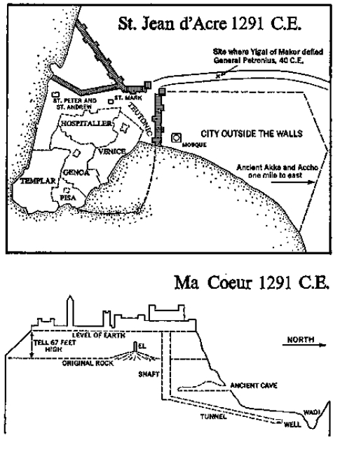

Seal of the Crusader Volkmar VIII
Seal of the town of Ma Cœur. Obverse: “VKMR VIII GRET S M CUR COND DOV REAVME DACR” (Volkmar VIII of Gretz, Sire of Ma Cœur, Count of the Kingdom of Acre). Reverse: “CE EST LE CHAST DE MA COVER DE JESUS” (This is the castle of Ma Cœur de Jesus). Issued at Ma Cœur, June 11, 1271, upon the investiture of Volkmar VIII. Cast in bronze at St. Jean d’Acre by German speaking artisans unfamiliar with the French used officially in the kingdom of Acre. Deposited at Makor April 2, 1291 C.E.
Cross section of Tell Makor from main gate on left to postern gate on right as it appeared in 1291 CE. when rubble had accumulated to a height of 67 feet. From left to right the structures of Ma Cœur are: tower of the main gate, minaret of the mosque, Crusader tower added to the Byzantine basilica of Father Eusebius, castle moat, main gate of the castle of Count Volkmar, principal castle building, north wall of the castle. The water system dug by Jabaal the Hoopoe in 966–963 B.C.E.-is shown as reopened by Gunter of Cologne in 1105 CE. The cave occupied by the Family of Ur in 9834 B.C.E. is shown, as is the monolith to El which this same family erected in 9831 B.C.E. and which now stands buried under the altar of the basilica.
In the spring of 1289, when the spiritual fire that had sustained the Crusades had died away to an ember, when Jerusalem was lost forever to the infidel, when the lovely chain of seaports reaching southward from Antioch had fallen permanently into enemy hands, and when a sense of doom hung over the land like a searing cloud of sand particles blown in by the khamsin, the walled city of St. Jean d’Acre still remained as the Crusader capital and the eighth Count Volkmar of Gretz still defended the castle of Ma Cœur as a bulwark of the faith, trusting that some miracle would permit him to retain it for another generation.
Then, on April 26, 1289, a miracle caused his prayers to be answered. The Mamelukes, a handful of slaves imported from Asia to serve the Turks, had somehow gained control of the vast Muslim empire and unexpectedly volunteered to extend their truce with Acre for the traditional period of ten years, ten months and ten days; and when this reassuring news sped across the Holy Land, caravans started moving once more between the Mameluke stronghold of Damascus and Acre. French and Italian newcomers, struggling ashore at the latter seaport after tedious voyages in dangerous ships, were frequently astonished to find that among the first persons to greet them upon landing at Acre were beturbaned merchants from Damascus, trying to earn an honest bezant by sharp trading with the Christians. It was difficult for these new arrivals to understand when the resident Crusaders explained: “Of course, it’s your duty to kill infidels, but not these infidels, because with them we conduct a very good trade from which everyone makes a profit.”
Among the first of the Muslim merchants to drive his camels across the overland route from Damascus was the old Arab Muzaffar, who in the fall of 1289 made one of his accustomed stops at Ma Cœur to peddle his pepper and nutmegs, his China silks and Persian brocades and, most importantly, to hand Count Volkmar a document from the Mameluke officials in Damascus. As always, the residents of the castle extended old Muzaffar a brotherly welcome, for through the years he had handled much business for them and was considered a member of the family, especially since years ago at the wedding of Volkmar VII, the present count’s father, the old Arab had advanced the castle a goodly sum toward the festival expenses.
He was short for an Arab and inclined toward fatness, so that when he stood against Count Volkmar, who like his ancestors was red-headed and rugged, he seemed flabby; but when properly dressed in fawn-colored robes, with a black and gold cord about his headdress, and with his white beard standing out from his tanned face, he was handsome; and when he delivered the official document he smiled warmly. “The Mamelukes grant you permission to go on pilgrimage,” he said in French, making himself comfortable in the castle hall.
“You’ve read it?” Volkmar asked in Arabic.
“Of course.” Abruptly he abandoned the count and hurried forward to greet the countess, who kissed him warmly on both cheeks. She was a slight, winsome creature whose plaited locks hung in two strands forward over her shoulders and reached to her waist. After studying her with approval Muzaffar observed in French, “Almost every garment you wear has reached Ma Cœur on my camels, and today I have a worthy successor.” He called for one of his men, who brought a leather box containing a long-trained dress made of samite, adorned with wide sleeves and decorations of pearl. “For a lady who is going on a pilgrimage,” he said graciously, and she realized that this beautiful garment was being offered as a gift.
“The Mamelukes have given permission?” she asked.
“After a little help, here and there,” he laughed, twisting his right hand this way and that to indicate bribery.
“You’re our dearest friend,” the countess cried, kissing him again, “but I’m not going.” The old Arab made as if he were taking back the dress, and she caught his hands. “But in my new dress I’ll make a little pilgrimage right here,” and from a window she pointed down to the basilica, the Maronite church and the Roman. The latter stood across from the mosque.
“But our son’s going,” the count explained.
“How excellent!” the old trader cried in French. “Volkmar! Take your pilgrimage next spring. We can meet in Saphet and ride across the hills together.”
The count, a tall rugged man in his forties, clean-shaven and sharp of feature but dark of face like his Holy Land ancestors, studied the proposal for some moments, then countered cautiously, “It would be appropriate to see Saphet with you, Muzaffar, but there are two drawbacks. In spring the Galilee grows warm, which would not of itself stop me, but from Saphet I’d planned returning over the hills to Starkenberg to show my son the German castle there, and that would take you far out of your way.”
“Not at all!” the old man protested. “I’ll send the camels along the trail with a driver. I’ll ride across the hills with you and catch up with the camels here.”
“Will you bring your own horse?” Volkmar asked.
“It might be better if you brought one for me… No! I’ll buy the best horse I can find in Damascus, then sell it when I reach Acre.”
“Agreed?” Volkmar asked.
“Saphet in April.” As the two friends shook hands, the Arab added, “And if I’m to do that I must be moving.”
“Not till you’ve eaten,” the count protested, and he called for an early lunch.
The great hall in which the two men sat had been finished in 1105 by Gunter of Cologne, and it was a masterpiece of Crusader art, its thin rock ribbing rising in a series of high arches into which narrow windows had been let. The stone floor was of excellent workmanship, each stone abutting tightly against its neighbor, so that in nearly two hundred years it had required resetting only once. When the paving was freshly oiled—as it was this day—it looked more like soft carpeting than hard stone.
About the room were placed statues of some of the famous owners of the castle, silver candlesticks from Damascus and Aleppo, items of gold from Baghdad and enameled boxes from Persia. Because wood was beginning to be scarce in the Holy Land the huge chests that lined the walls and the long table had come to Acre on Genoese ships from the forests of Serbia, but the spectacular tapestries that hung on the eastern wall had been woven in Byzantium.
It was a beautiful room, and much life had passed through it, for in the preceding hundred and eighty years the Volkmars had contracted family alliances with most of the great Crusader families, except only the Bohemonds of Antioch and the Baldwins of Jerusalem, who had always refused to marry with the line of Ma Cœur. Marriages had been performed in this room and coronations, and in August of 1191 month-long celebrations were launched when the castle was recaptured from Saladin by Richard the Lion Heart of England and restored by him to Volkmar IV. Richard had stayed in the castle for two weeks, recuperating from his siege of Acre. The princes of Galilee had graced this room, the Embriacos from Genoa and John of Brienne. Here the emissaries of the Comnenus emperors of Constantinople had come, and the Ibelins, a local nobility, and the queens of Armenia. How great they were, the lords of Tyr and Cesaire, the counts of Tripoli; but in the history of the distinguished room one name stood out above the rest.
“Let us drink to Saladin, cursed be his memory,” Volkmar proposed, and the old trader raised his glass, even though as a Muslim he should not have taken wine.
“I love wine,” the old man said, adding, “Saladin was so noble he should have been an Arab.”
“He killed two of my ancestors,” Volkmar observed.
“If both sides had listened to him,” the old man reflected, “we should have long ago devised a way of living on this land.”
“That much I grant you,” Volkmar agreed.
At this point the count’s son, a boy of eleven, came in from his studies and greeted the Arab, who had often brought him unexpected gifts from Damascus. The two spoke in Arabic, and Muzaffar asked the count, “Have you ever shown your boy the Horns of Hattin?”
“No,” the count laughed. “Our family prefers to stay away from there.”
“You should do it next spring,” Muzaffar suggested. “The more we know about history, the better.”
Countess Volkmar interrupted to summon the men to a smaller room where a generous meal was spread across a heavy wooden table. The principal dish was roebuck, taken from the hills opposite Acre, but there was also grouse brought to the castle by Muslim traders from Jerusalem. About the table were placed bronze bowls of damson plums and apricots from Syria, oranges and late melons from fields near Ma Cœur. Volkmar judged that Muzaffar’s men must have already sold the castle new supplies, for he was offered a small silver dish from Athens containing Persian violets crystallized in transparent sugar. These were flavored with cinnamon and were intended for dessert.
“I have always loved to eat from your plates,” Muzaffar joked. “They almost make me feel a Christian.” He lifted the proud old plate, designed in Jerusalem years ago but baked in the potteries of Egypt, and studied it again. It was handsomely crazed and bore only one design, in red: a large, stupid-looking, gape-mouthed fish, and for nearly two centuries each Crusader fortress in the Holy Land had owned a set of such dishes, for they had become the most popular emblem of Christianity: centuries before, someone had discovered that the Greek letters for the word fish, ichthys, formed an acrostic which could be translated “Jesus Christ, Son of God, Saviour.”
As they ate, Muzaffar looked at the folios that stood in cases along one wall of the room. Ma Cœur owned seventy volumes, a notable library for that day, and most had been brought there by Muzaffar. In Aleppo, Smyrna or Baghdad, wherever he had happened to be, he had acquired old works for his friend, for like many Arabs of his day he thought it strange that the unlettered Crusaders took so little interest in learning.
When the leisurely meal ended he took one final gulp of wine, kissed the countess farewell, gave young Volkmar some coins from beyond Persia, and took the count’s arm, walking him out to the camels. When they were alone he asked quietly, “And at the end of the truce?”
Count Volkmar considered for some moments, then said, “The men at Acre are hopeful, but I’m cautious. The Mamelukes may drive us from the land.”
“I think so. What will you do?”
“I shall not leave this castle.” The count suspected that Muzaffar might have come as a spy; if he did, the Mamelukes had driven him to it. On the other hand, if they had sent him they had better know the facts. “I’ll resist,” he repeated stubbornly.
“And the boy?”
“There’s the question,” Volkmar replied in undisguised perplexity.
“Why don’t you send him back to Germany?” Muzaffar suggested.
“My father made a visit to Germany and I can remember his telling us that compared to the way we lived at Ma Cœur, the Germans lived like animals. And for their part, the Germans felt that he had become an Arab and they wondered if his religious attitudes could be trusted. He told us that between him and his cousins there had been little understanding: he loved learning and they couldn’t read; he liked philosophical discussion, but all they knew about was hunting. In short, he had been civilized by the Arabs while they had been allowed to remain suspicious barbarians. At the end of his uncomfortable visit everyone was relieved to see him go—he most of all. I don’t think my son would like Germany.”
“But I warn you, Volkmar. He should leave.”
“I know. But where?” The two old friends embraced and the Arab returned to his camels.
On a sunny morning in late April, 1290, Count Volkmar rousted his eleven-year-old son from bed and took him to a room where waiting men had spread upon the floor the boy’s first full suit of armor. “We shall be riding over dangerous countryside,” the count explained. “A safe-conduct is no protection against stragglers and robbers.” After the men had dressed the boy in his usual underclothes, they fitted him with a padded tunic made of thick folds of linen stuffed with cotton wadding that had been soaked in vinegar. This would withstand arrows. Over it they put a light, flexible coat of mail whose joints worked easily and whose edges fell to the boy’s knees. It was slit in the back, so that he could sit astride his horse. His feet were slipped into iron shoes from which a long tongue extended upward to protect the shinbone. And because the pilgrims would be riding in hot sun, over all was thrown a thin gauze cloak upon which had been stitched in blue silk the seal of the castle: a round tower flanked by another.
Proudly young Volkmar clanked in to greet his mother and to kiss her farewell. He carried no lance, but he was allowed a token sword and a stout wooden shield covered with hard leather and studded with iron. In the courtyard he saw with satisfaction that each of the knights was dressed like him, except that they were heavily armed, and all wore iron helmets which looked like buckets but which allowed them to see and breathe through small slits.
The drawbridge of the castle was lowered, the iron gates were swung open, creaking in sunlight, and the entourage spurred their horses across the moat and down into the mud-walled town, past the Catholic church of Rome, past the Maronite church of Syria, and up to the old Byzantine basilica called Sancta Magdalena, at which pilgrims had been halting for nine hundred years, seeking blessing before they headed east to the Sea of Galilee on a visit to the scenes of Christ’s ministry. Resting their horses by the entrance the knights dismounted and made their way into the darkened chapels, where they knelt and asked blessing on their venture. A faltering priest in ragged vestments mumbled Greek words over their bared heads, and they crossed themselves, returning to their horses and the lovely green countryside of the principality of the counts of Gretz.
How beautiful it was, how achingly beautiful to the senses was Galilee that spring morning. The forests of cedar and pine had not yet been completely chopped away; olive orchards and the far vineyards still flourished; fields produced rich harvests of wheat and oats and barley, while small plots were kept aside for sesame, from which sweet candy was made for children. And at every fifth or sixth mile some new village of Volkmar’s fief would appear, each with its ninety-six Muslims and four Christians working together. It was a land, Volkmar thought as he surveyed it for what he sensed might be the last time, which truly flowed with milk and honey, and he was depressed to think that no way could be devised for holding on to it. As a descendant of the Family of Ur, Volkmar loved the land not only because it was his principality, but also because it was a good and beautiful thing of itself. It was worth preserving in its richness, and he knew that when the Mamelukes captured such land they took no pains to keep it productive. They killed the farmers, chopped down trees, destroyed the irrigation and abandoned the valleys to the Bedouins and goats. It would be cruel to see these fields laid waste, Volkmar reflected.
As the pilgrims headed toward Nazareth the count explained to his son, “The secret of wealth is to have many people working, but in the old days we did not understand this, so we slaughtered all who lived on the land because they were of a different religion. But we quickly learned that in doing so we were killing ourselves, and the land lay idle until we could find hands to till it. Our first count was among the earliest to discover this truth, and that was why through the years our family prospered whilst others did not.”
“Is that why we were able to build the castle?” the boy asked.
“Well,” his father hedged. He thought: In his own time the boy can read what Wenzel of Trier wrote and it would be difficult to explain now, but to his own memory the words of the old chronicler came back with all the muted force that had accompanied them when he had first read them:
And after the death of my Lord Volkmar, rest his Christian soul, unforeseen events took place in the castle of Makor. Sir Gunter of Cologne quickly took my Lady Taleb to wife but placed her son, Volkmar, in a prison, where the boy had little food and no sunlight and where none instructed him, and there the boy languished for seven years. For Gunter announced that he would have his own son who would inherit the principality, but when the lady became not pregnant, the knight swore at her in my presence and shouted, “Damn thee, thy womb swelled for him.” And one night at a banquet he roared to all that he would lie on his wife every night for a year until she bore him a son, and from her end of the table she said quietly that since she had already proved that she could have a child, and had done so, the matter must rest with him, and at his discomfiture we all roared. So Gunter found many women and lay with them, one after another, but none bore him a son and he was past forty years of age, and he saw that he was not to have a child and that when he died the only person to inherit his fields and his castle would be the boy who lay in prison, so the prisoner was brought forth, eleven years of age of which seven had been lived in darkness, and now my Lord Gunter turned to this child as if he were his own precious son and taught him all he knew of warfare and of defending castles and of governing peasants so that their yield would be improved. He required me to teach the boy Latin and Greek and the boy’s grandfather, Luke the Bailiff, perfected him in Arabic and Turkish, so that when the boy was sixteen Gunter contracted a marriage for him with the noble family of Edessa and the old knight was impatient, walking up and down the battlements, until the princess bore a son, for then my Lord Gunter cried, “Now, by God, you are worthy to own this land,” and it was this Volkmar who extended the boundaries.
They camped that first night on the edge of the swamp that filled the middle areas between Ma Cœur and Nazareth, and in the morning one of the guards wakened the sleepers with the cry, “The storks are rising!” The pilgrims rushed to view one of the memorable sights of Galilee: five storks from a large flock that had been resting near the swamp during their migration north had found a current of hot air rising from the land, and these five had already entered it and were being carried speedily aloft without using their wings at all. Their huge black bodies were canted upward and their white wings were extended motionless to their fullest extent, so that the rising air swept them aloft in wide spirals. Their pink bills were thrust straight forward and their long reddish legs trailed after them like rudders.
Those storks remaining on the ground understood from the manner in which their fellows soared into the air that an upward current had been found, and with awkward, lumbering jumps they loped across the meadows and projected themselves, wings outspread, into the column of rising air, allowing it to loft them far into the sky toward those highest currents along which they would migrate to Europe. When Volkmar and his son hurried into the morning sunlight they could see a mysterious pillar of more than a hundred storks, apparently motionless yet rising upward, one above the other, until the topmost ones were lost in the sky, and Volkmar quoted from Jeremiah, who had once watched these birds rising over the Galilee: “‘Yea, the stork in the heaven knoweth her appointed times.’”
“It’s an omen for us,” one of the knights avowed, for as the birds soared aloft, wings and necks and legs extended, they formed a series of supernatural crosses reaching from earth to heaven.
“An omen of good!” other warriors echoed, and all bared their heads and crossed themselves, but Volkmar, watching the topmost storks start flapping their giant wings as they left the rising current, said to himself: No omen, but a warning. They are flying to Germany and soon they will nest in the chimneys of Gretz. The storks had been sent to warn Volkmar and his family to leave the Galilee and go back to Germany. For many days his thoughts would be tormented by that column of majestic crosses, motionless in the sky.
One of the warriors experienced in the swamp now took command, and the file of pilgrims threaded its way southward through the mysterious waters that had always been such a challenge to the adventuresome men of the district. Leading their horses along the solid footpaths they startled egrets and the striking purple herons. The marshes were alive with flowers, tulips and lupine and cyclamen and orchids, and the one that had always so delighted the children of Ma Cœur: the slender olive-green plant with brown stripes whose leaves looked like the heart of Jesus and whose canopy protected a little gray-green man. “Priest-in-his-pulpit,” the children called the plant, and it was young Volkmar’s favorite.
At the far end of the swamp they regained firm ground and began their final march to Nazareth, but as they proceeded, the full richness of Galilee broke over them: bee eaters flashing through branches, olive trees shimmering in sunlight and red poppies marking their way like beacons. Let the storks head for Germany, Volkmar said to himself. What man would leave this paradise? And he determined to stay on his land.
At Nazareth, which seemed a sturdy anchor of Christianity in a land already become infidel, Volkmar left the others and went alone to the grotto where the archangel Gabriel had announced to the Virgin that she was to become the Mother of Jesus. It was a portentous spot, more nearly a deep cave than a grotto, and its walls were damp. As Volkmar stood in the narrow space the actual presence of Mary and Gabriel was made manifest. It was for this that the Germans, the French and the English had fought: that the Christian world might come in peace to such sacred spots and worship; but after two hundred years of warfare a knight of Ma Cœur could come to this holiest of spots only on sufferance of a Mameluke slave. What had gone wrong? Why had the various Volkmars been unable to hold Nazareth, or the Baldwins, Jerusalem? Why should the scenes of our Lord’s passion be in infidel hands, lost forever to the Christians? He could not understand, and he lowered his strong head and whispered, “Mary, Mother of God, we have failed you. For some reason I cannot comprehend we have failed and soon we shall be driven away. Forgive us, Mary. We did not find the way.”
For nearly an hour he remained alone in the sanctuary, then climbed gloom-ridden back to sunlight and told his son, “You must go down to see the spot where the Word became flesh,” and he spoke no more of that holy place.
They rode then to Mont Thabor, where the appearance of Jesus had been transfigured from that of an ordinary mortal into the reality of a deity, and they stayed with the monks who ignored Mameluke threats and operated on top of the mountain; and next day they rode to the gentlest of the holy places, Cefrequinne, the Cana of Bible times, where a Muslim and his wife showed them the very cot on which Jesus had rested during the wedding feast. Young Volkmar asked in Arabic if he might lie on the Lord’s couch, and the Muslim replied, “For one coin anyone may lie on it,” and the boy did so. He also saw two of the six jars which had held the water which Christ had turned into wine, and touching their rough clay the boy experienced a historic sense of Jesus. “Are these the real jars?” he asked, clasping his fingers about the handle that Jesus might have used.
“Yes,” the count said, and when the others were not looking he, too, grasped the heavy clay pots. This turning of water into wine had been the first miracle, the initial step taking a Nazarene carpenter to Calvary, and Volkmar heard the long-ago words which Wenzel had written of the first Volkmar: “For I was in Jerusalem on the morning I set out from Gretz.”
What had been the deciding point in the Crusades? Volkmar wondered as he stood in the house at Cefrequinne. When had failure become inevitable? He supposed it must have been at some unrecorded date early in the 1100s, in the time of Volkmar II, when it became obvious that no great number of European settlers were going to make the long trip to Jerusalem. We never had enough people, the count mused. How often do we hear of this king or that whose wife died or whose sons wasted away with no one coming along to take their places? We were always so few… so few. In the rude hut where Jesus had begun his mystical life the names returned: Baldwin and Bohemond, Tancred and Lion Heart, and that false Reynald of Châtillon who had destroyed so much. “God! I would like to have that man’s throat between my hands right now!” Volkmar cried, and instantly he was ashamed of his passion in such a holy place, but the Muslim caretaker took no notice, and Volkmar muttered, “There are two things for which I respect our enemy Saladin. He destroyed nothing in our castle and he killed Reynald with his own hands.”
A true sadness came over Volkmar, and he sat upon the couch of Christ and lowered his head. How had men so essentially good in heart permitted catastrophes like Reynald and his kind? Than the saintly Louis, the French king in Acre, there could be no sweeter man; and the greatest of them all, Baldwin IV of Jerusalem, who, when his body was rotting away with leprosy and his eyes were bund and his feet gone, insisted still upon being carried into battle one last time against Saladin, whom he had defeated time after time.
We rode out to battle in the desert [wrote the Volkmar who was to die at the Horns of Hattin] and the purple tent of Baldwin went with us; and when the enemy saw this tent once more on the march they fled, and when they were gone I went in to tell the leper king of his latest victory and he turned his sightless eyes upon me and thanked me and I drew away lest he hear my tears, for I had forgot that he was but a boy of twenty.
Why had they gone, the great ones, leaving the lesser behind? Baldwin the Leper was one of the superb kings of the east, but he had died a boy, leaving a creature like Reynald of Châtillon to contest for his throne. We needed fresh blood from Europe, and it never came, Volkmar reflected. His own family had remained strong—eight Volkmars in a row, and his son seemed as promising as the others —but perhaps it was because they had often brought their wives from afar. His own countess had come from the noble family of Ascalon, but his mother had been raised in Sicily. If, after the First Crusade, we had never allowed another knight on this soil, Volkmar decided, but if we had brought instead farmers and shoemakers, we could have held the kingdom. In his gloominess an ironic thought came to him and he laughed, pressing his hands against the couch of Jesus: A better idea, each year we should have imported a dozen shiploads of French and German milkmaids, for the European men, unable to find wives of their own background, had married wantonly into the local population. Any girl who would step before the priest and allow herself to be baptized was termed a Christian…
He stopped. His judgment was ungenerous, for it had been Taleb, wife to the first count and the worst kind of cynical convert to Christianity, who had really saved the principality for the Volkmars. Of this extraordinary woman her son had told the white-haired Wenzel of Trier:
In the long years when I lay in the dungeon without seeing sunlight, two people came to mean the entire world to me—the jailer who brought my food, throwing it on the stone table without speaking—and my mother who slipped through the gates I know not how. Once I saw the jailer kissing her and perhaps that was the coin she used, but she came as often as she could escape Gunter’s detection and she talked with me. How simple that statement is, how much it signifies. She talked with me. Unlike my father and Gunter, she could read, and she told me of all that she had learned, and this I prized more than the bits of food she smuggled to me. And I remember that each time she sat with me she said three things: “I am not pregnant.” “Soon the brute must awaken to the true situation.” And, “Volkmar, you shall be the amir of this principality.” If it had not been for her, when I finally was taken from the dungeon I would have been an idiot.
This second count later testified that during his long reign it was his mother who had advised him on how to deal with Arabs and on ways to enlarge the fief by invading lands loosely held by incompetents. Yet at her death she had outraged the kingdom by replying to the priest when he asked her if she was not happy that she had left off being a Muslim and become a Christian: “I was never either. Both ways are folly.” And in spite of the priest’s pleadings and those of her son, she died in this belief, so that no statue of her, nor any plaque, was permitted in the chapel of Ma Cœur.
We never had enough people, Volkmar mourned in Cefrequinne as he visualized the map. We held the cities of the coast from Antioch to Ascalon, but the sources of real power, like Aleppo and Damascus, we left in the hands of the Turks. And now the Mameluke. And even with that condition facing us we still refused to do the two things necessary for our survival. We never became a sea power with ships of our own, for we depended upon the men of Venice and Genoa, who bled us white and betrayed us whenever it suited their interests. Nor did we achieve an alliance with the Arabs, binding their land to ours. So in the end Syria combined with Egypt and we were left an enclave on the edge of the sea. He reflected on the lost glories and concluded: We produced men of vision like Volkmar the Cypriot, but whenever they were about to effect some kind of compromise new fools landed from Europe to slay the Arabs and to destroy what the wise men were attempting.
He snapped his fingers and the Muslim caretaker hurried over. Volkmar apologized: “I was thinking…” and the Muslim shrugged his shoulders. There’s the contradiction! Volkmar thought as the man left. And I never perceived it before. We needed the settlers from Europe… couldn’t exist without them. But all we got were warriors determined to kill the very friends we had to depend on for survival. Ah, well. He sighed ruefully and assembled his men for the ride to the Sea of Galilee; but as they saddled up he said, “We are thirteen—the number of those who dined at our Lord’s Last Supper.”
He was unaware, at that moment, of the contradiction in which he was caught, for on leaving Cefrequinne he and his men knelt in reverence to that hallowed spot, not realizing that the true Cana of Christ’s miracle lay seven miles northwest at a site now remembered only by coyotes. In the year 326, when Saint Helena, the mother of Constantine, had come this way identifying the scenes of Christ’s life, even the name of Cana had been locally forgotten, and in answer to her inquiries helpful peasants of Nazareth had shown her a mud-walled village, saying, “This is Cana,” and Cana it had henceforth been. The Lord’s couch, the water jugs, were the inventions of Muslims who collected pilgrims’ coins thereby. In many similar externals the Crusaders had been deceived by the Holy Land and had failed to grasp the realities that confronted them, but in their dedication to a religious principle they had not wavered, and when these men now prayed in the false Cana, they prayed to a real Saviour.
They rose and for some hours traveled eastward through the fallow countryside, and wherever the earth was exposed it looked damp and dark, the kind that grows its weight in food. The trail was still marked with flowers: the purple thistle and the yellow daisy and that blue five-petaled beauty which winked with pollened eyes as men rode by. It was a land of exquisite loveliness, well suited for the birthplace of a Saviour, and then the men riding ahead cried, “The lake!” and all spurred their horses, and the knights in armor paused in wonder at the beauty of the scene below.
It was the Sea of Galilee, now known by its Latin name, Mare Tyberiadis, sunk in its deep depression among surrounding hills whose red and brown coloring played across the surface of the water, so that sometimes the lake was its own blue—a deep, pulsating blue of vivid quality which made the heart cry out with joy—while at other times it was red or brown or, where the trees were, green. But always its colors were in motion, a living, twisting kaleidoscope, as marvelous a body of water as there was on earth.
“This is the lake of Jesus,” Volkmar explained, as his son gazed down upon the water on which the Lord had walked. “To the north is Capharnaum, where we shall travel later. The city with the castle is Tabarie. Years ago it belonged to your uncle’s family, but now it’s Mameluke.” And the men rested their horses for a long time, surveying the incomparable scene which for so many years had been denied them because of Turkish conquest.
Young Volkmar was eager to ride down to Tabarie, for the walled city was inviting, but his father indicated that they must postpone that visit for a while and ride to the north in the direction of a strange hill composed of two projections. “The Horns of Hattin,” the count said, “and I would our house had never heard the name.” His knights crossed themselves, for of the twelve men riding that day from Ma Cœur, each had lost an ancestor at the great battle and some, like Volkmar, had lost four: great-great-uncles and great-great-grandfathers and men who, had they lived, might have held the kingdom together.
“It was in July, 1187, more than a hundred years ago,” Volkmar explained. “Saladin was in Tabarie with all the water and wall he needed. At Ma Cœur were the king and the greatest knights of the day, and in our hall the argument began. What would you have done, Volkmar? You’re safe inside your castle. You have thousands of strong men and more than enough armor. You have water at hand and food. To defeat you, Saladin must leave his walls and his water, march up this hill, come far across the plains we’ve just traveled and then try to fight you in your own castle. What would you do?”
“I’d get lots of food inside the walls and wait,” the boy answered.
“Great God!” the count cried, smiting his mailed chest. “A child understands. But what did the fools around the king propose? That we leave our tight castles. That we leave our water supplies and our food, and that in the middle of summer we put on our coats of mail and march here to fight Saladin on ground of his own choosing.”
“That’s what we did,” one of the knights muttered, surveying the improbable battlefield.
“The men of Volkmar pleaded against the folly,” the count recalled. “Our grand hall echoed with their arguments, but after they had explained how easy it would be for Saladin if we left our castle and fought him here at Hattin, Reynald of Châtillon…” The Count of Ma Cœur looked away and muttered, “May God damn his infamous soul. May God curse him afresh in hell.” He took his son’s hands and said gently, “Next morning when Volkmar IV and his son rode to battle they told their wives that they would not be coming back.” The gloomy descendants of that day looked at the Horns and were mute.
“Did they fight here?” the boy asked, for he had grown to like the gently falling field, with its protecting Horns and fine view of the lake below.
“I suppose you’d call it a fight. Twenty thousand Crusaders left Ma Cœur on July 3, the hottest day of the year, and in full armor—much heavier than we wear today—marched without finding water to this spot, where Saladin had more than a hundred thousand men waiting. We had one thousand horsemen. He had twenty thousand. On the final night before the battle our men were dying of thirst… there was a well over there, but they didn’t find it… the moon shone on the lake and they could see the water. It sent them mad, and Saladin knew it, so he set those fields on fire and sparks and smoke blew across our people, and at dawn he began to tighten the net. It was the worst battle that men have ever fought in this land. Cruel… cruel.”
“Why did our side do such a thing?” the boy inquired.
“Because it was the turn of stupid men to lead us,” Volkmar replied. “We lost Tabarie and the Galilee and Jerusalem and Ma Cœur, and even St. Jean d’Acre.” He turned away from the others and stared at the hills. “We lost so much,” he muttered to himself. “Later on we won back Ma Cœur and Acre but Jerusalem was gone forever, and now the twilight deepens.” He began to hum a chant from the Catholic liturgy Tenebrae factae sunt, The shadows are falling.
Behind him he heard the knights explaining to his son, “Count Volkmar broke through the ring of iron and died leading his men toward the lake. They reached here,” and the men showed young Volkmar where his ancestor had fallen.
“Was his son with him?” the boy inquired.
“Of course,” the knights answered, “Volkmars always seek the enemy,” and the company saddled again and resumed their march to Tabarie, where the Mameluke guards were astonished to see them riding like ghosts out of the hills in which their ancestors had perished, so that an alarm was sounded and the governor himself, a Mameluke with fierce mustaches, left the fort and came to the gate, where he inspected the order from Damascus and allowed the pilgrims entrance.
It was an inviting little city they had come to, close-walled on three sides and with the lake on the fourth. Since Galilee stood far below sea level the air was heavy and hot, but the cool breeze from the lake was welcome and the food was excellent. The Arabs who inhabited the town—there were not more than six Mamelukes and a hundred Turks—were hospitable, and all were eager to hear news of Acre and Nazareth.
The warriors laid aside their armor and lounged in comfortable chairs beside the lake, drinking beverages which the garrison supplied, after which the Mameluke governor, pressing down his mustaches, proposed that all go down the road to the hot baths which had made the city famous in Roman days, and for the first time young Volkmar saw springs gushing from the ground bringing water far too hot to touch. The dusty men indulged themselves in the humid rooms and felt the tedium of the saddle seep away in the heat. Then they dressed and rode back to the city, Count Volkmar experiencing pangs of regret when he thought: Once it was ours. Once a prince lived here and gathered fees from lands ten miles away. To come to Tabarie in winter and take the baths, that was the best that Galilee offered.
He thanked the Mameluke officer for his courtesy and the former slave bowed, and as he did so Volkmar cried to his son, “Look! Look! There’s a Jew.” And for the first time in his life the boy saw a Jew.
“A few returned from the lands of the Frank,” the Mameluke explained, studying the stranger as if he were a new kind of horse, useful but not customary.
Young Volkmar stood fascinated as the strange man walked slowly through the streets, bearded, cap on head, shuffling a little, looking for something or somebody. The Mameluke called out to him in Arabic, and the man came over to the knights. His Arabic was not good, but he was able to explain that he had come from France.
“Why?” the mustachioed governor asked.
“Because this city is holy to the Jews,” the man replied.
“Why?” Volkmar inquired.
“Because the Bible was written down in this city and because the Jerusalem Talmud was, too.”
“What’s the Talmud?” the knights asked.
“The Jewish book of law,” the man explained, and he was allowed to walk on.
For a perverse reason Volkmar was pleased that his son had finally seen a Jew, for none had stopped in Ma Cœur for two hundred years, yet when the boy grew older and read the chronicles he would surely come upon that cryptic passage that had caused the Volkmars so much irritation. An unknown priest had put his suspicions into writing, nearly two hundred years before:
And after a while men reasoned thus: On her deathbed the Countess Volkmar said only that the religion of Christ and the religion of Muhammad were folly, and in the great halls the rumor circulated that this was because she was herself Jewish, in a secret way, and it was recalled that often friends had asked her, “Why do you not drop your name Taleb and take a Christian name?” and she had oft replied, “Because I was born Taleb and it would be foolish to change.” And then others remembered that her father, known as Luke—for he did take a Christian name—had borne all the signs of a true Jew. He was good in medicine. He ate no fat of the meat. He could read and write. He knew mysterious matters. And he was unusually skilled in handling money, which he did for Count Volkmar so long as the count lived, then for Sir Gunter. And the suspicion grew and it was for this reason that some of the great houses like Antioch and Jerusalem refused to marry with the Volkmars, but others, seeing how the principality prospered, above all others, were in great speed to ally themselves with it.
Count Volkmar laughed at the old tale and recalled “the great houses” which had refused to intermarry with his ancestors. “Where are they now?” he asked. “They vanished so long ago.” Then he chuckled. “Taleb is about as perfect an Arab name as you can find. She wasn’t Jewish. She was stubborn, and would to God her descendants had been more stubborn that night when they allowed the idiots to argue them into fighting at the Horns of Hattin.” He shook his head as if loose things—ideas, memories—were floating therein, unconnected, and then he fell back in his chair and stared at the lake.
From Tabarie the pilgrims rode north to Capharnaum, a lovely deserted spot where rich fields drifted down to the water and where Jesus Christ had fed the multitudes by hundreds and by fifties, with only five loaves of bread and two small fishes: “And they did all eat, and were filled. And they took up twelve baskets full of the fragments, and of the fishes. And they that did eat of the loaves were about five thousand men.”
“Could it have happened?” the boy asked.
Volkmar looked at his son in astonishment. “Of course!” he said. “If you had caught a fish from the lake you’d have seen that it was only half a fish, swimming around with a piece bitten out. It was thrown back into the lake by Jesus after the fragments were collected. Of course these things happen. That’s why we come on pilgrimages.”
The boy studied Capharnaum with new interest, whereupon his father explained, “The five thousand men were seated here. The two fish were carried in a basket up that path. And Jesus stood exactly where the altar of that ruined church used to be. When I was a boy you could see on the floor of the church a picture of the fish,” and he led the knights into the ruined sanctuary and rummaged about the rubble until he found the mosaic which once had been kept polished by priests of Byzantium; and the two stone fish were as real to him as the living flowers of the fields outside. Here Jesus had stood. Here He had fed the five thousand with the two fish represented in the panel.
“This is why our land is called holy,” he said quietly, and the knights resumed their climb into the steep hills until they came at last to the mountain village of Saphet, where they were to meet Muzaffar coming his own way from Damascus.
This was the most painful moment of the trip, more so even than the silent Horns of Hattin, for that battle had occurred a century before, whereas the loss of Saphet was still a gaping wound in Crusader memory, and after the knights had presented their safe-conduct to the Mameluke garrison they passed into the courtyard of what once had been a notable Christian castle. High on a hill, with precipitous falls on each side, the soaring castle of Saphet had been a beacon to the surrounding countryside. From its battlements one could see the Sea of Galilee far below, and the plains of the north. It commanded the road from Damascus to Acre and dominated a dozen lesser passes. When the signal fires on its highest turrets were lighted they were seen on the seacoast, and Acre could be assured that all was well along the eastern marches. It was the hilltop castle par excellence, and in 1266 one of the real tragedies of the Crusades had occurred here—one that still struck terror in the European heart.
The first Mameluke sultan had laid siege to Saphet, and after a brilliant initial resistance the defenders were driven to realize that the winds of history had changed and that they would no longer be able to hold such outposts. Gallantly they offered to surrender so that no more lives need be lost, and terms were faithfully agreed upon: open the gates and each man would receive safe-conduct to Acre. The Mameluke sultan gave his binding oath, and the long siege ended. But not according to the pact. As soon as the sultan was within the gates his men pinioned the defenders and every knight was beheaded on the spot. “We wanted them to know the kind of enemy they faced,” one of the Mameluke generals explained, and thus the war of extermination was launched.
Now Saphet was a ghost town. The lovely settlement that had once clung to the flanks of the hill, outside the fortress walls, had been erased by the Mameluke attackers and had not yet been rebuilt, so that the fortress stood alone, its massive walls beginning to crumble. “We’ll pull them down one of these days,” the officer-in-charge stated. He seemed a likable person, not one given to beheading prisoners. His head was shaven and bore a deep scar at which young Volkmar stared. He ordered refreshments to be served on the battlements, where cool breezes drifted across the mountains.
“It’s a marvelous spot,” one of the garrison said in Arabic as he pointed to a village that nestled below on the flank of a hill. “I often wonder about that village. In all the wars that have been fought over Saphet I suppose it’s never been touched. But up here… battles… bugles… beheadings.” He looked directly at Volkmar as if he regretted the facts of history.
Crusaders and Mamelukes enjoyed two fine days at Saphet. Archery contests were held, with the Mamelukes winning by a consistent margin, but in sword play the Crusaders prevailed. “That’s how I got my scar,” the Mameluke officer explained to the boy. “One of your swords at Tyr.” Horse races were arranged within the castle walls, and here the smaller Turkish mounts had such advantage that the Crusaders could scarcely keep up on their lumbering beasts. “But on a long march to be followed immediately by a battle,” Volkmar said, “our horses are better every time.”
The baldheaded Mameluke replied, “For your tactics, yes. For the quick dash and retreat of our warfare, your horses would be too heavy to handle.” The men traded a big horse for one of the swift Turkish animals, and young Volkmar was given the beast to ride back to Ma Cœur.
Then the Mameluke captain asked a most bold question: “How long do you suppose the sultan will allow your fortress and Acre to exist?”
Volkmar scratched his clean-shaven chin and said slowly, “The truce agreed upon last year runs beyond the end of the century. I would suppose …”
“Do you think a truce can be observed that long?” the Mameluke persisted.
“Yes, I rather do. After all, both you and we gain real advantage from having Acre available to ships …”
“Agreed!” the Mameluke replied whole-heartedly. “You and I know that we ought to prolong the truce. Between us there’s no trouble. But we’ve been told by the Genoese… I heard it myself in Cairo from a sea captain’s lips… Your Pope is preaching a new Crusade.”
“Yes,” Volkmar said disgustedly. “Back there they don’t understand…”
“And if ten shiploads of knights eager for battle…”
The two leaders looked glumly down at the waters of Galilee, now red, now green, and a younger Mameluke broke the silence by observing, “I doubt the truce can last ten years.”
“I doubt it, too,” Volkmar concurred gloomily.
In the morning the old castle sounded as it must have in days past, for men were shouting on the battlements, and all came out to see the first camels of Muzaffar’s caravan picking their way along the mountain road. There was cheering, for his arrival meant that the garrison would have fresh food, and the gates were thrown open to admit the seventy-odd beasts and their armed attendants. True to his word Muzaffar appeared on a fine horse, from which he dismounted as if he were a young man. Moving easily across the stones in his long robes he saluted the garrison commander, then embraced Volkmar and kissed his son.
He had a dozen bits of news. He, too, had heard that a new Crusade was being preached in Europe. “Will they never learn?” he expostulated. “Seriously, this may be the last trip I’ll dare to risk. And when you see all the goods in Damascus waiting to be traded and all the things that the, Genoese ships are bringing to Acre…” He spat into the wind. “We’re all fools.”
The baldheaded Mameluke wanted the old trader to stay with them for several days, for he was like a troubadour, filled with gossip, but he refused: “I’ve got to get the camels to Acre.” Then he suggested, “But I could do this. If you’ll send a guard as far as Ma Cœur, I’ll send the camels off now and I’ll stay here overnight and we can ride to Starkenberg in the morning.”
It was agreed, and two young Mamelukes who wanted to see Ma Cœur were dispatched with the caravan while its owner relaxed on the sunny terrace, chatting about the rumors of empire. “What we can’t understand in Damascus,” the old man remarked, “is why the Pope should cry for a Crusade from Europe when he has a perfectly good one alive right here in Asia and does nothing to support it.”
“You mean the Mongols?” the Mameluke captain asked.
“Yes!” the old Arab insisted. “The other day I was talking with a Mongol trader down from Aleppo. He says the whole swarm of them are ready to become Christians if the Pope says the word, and they’d be an army of hundreds of thousands smashing at you Mamelukes from the back door while the Europeans hammer at the seaports. They’d have you caught in a trap.” He squeezed his wrinkled hands together with force.
“We used to worry about that,” the Mameluke confessed, rubbing his scar. “For years we wondered when the Mongols and the Christians would combine against us. But now we don’t worry. It can never happen.”
“Why not?” the old man asked.
“It’s difficult to explain,” the Mameluke answered. “Look how the Turks let us steal their empire. We were one man in ten thousand and slaves at that. At any point they could have stamped us out, but now we own the world. I suppose you’ve heard that Tripoli has fallen.”
“Yes,” Volkmar said with the sensation of doom settling upon him.
“Look down there,” the Mameluke said, pointing to the hillside village over which a cloud was passing while the rest of the world remained in sunlight. “We can see the shape and direction of the cloud, but the villagers can’t, because they’re in it We can also see what the Pope ought to do, but he can’t, because he’s in it.” The cloud drifted off.
“I’m really worried,” the old trader broke in. “When the recent truce was arranged I thought: I’ll be trading with Acre for the rest of my days. But with Tripoli gone, with the Christians behaving so blindly…” He rose in agitation. “I’m afraid you Mamelukes will destroy Acre within the year.”
“We may have to,” the captain agreed, and as he spoke Muzaffar saw that, undetected, young Volkmar had approached the group and was listening.
Next morning Muzaffar and the two Volkmars rode north to Kafr Birim, where a settlement of Jews returned from Spain clustered about the ruins of that once-noble synagogue, and while the boy ran about gawking at the first group of Jews he had seen, his father spoke secretly with Muzaffar: “On your trip back to Damascus would you take my son with you? Get him to Constantinople and somehow to Germany?”
“You’re so concerned?” Muzaffar whispered.
“I am.”
“Then I’ll confess what I’ve told no one else. This is my last trip, old friend.”
“You think the Mamelukes will strike so soon?”
The Arab nodded, and the company started mournfully westward across the finest hills of Galilee, but at Starkenberg they found only ruins. That fair, poetic castle, perched on its crag like a solitary eagle, had once been the beau ideal of Crusader castles, but it had been overwhelmed by the Mamelukes, and now its jagged turrets and crumbling walls seemed like the broken teeth one finds in a weathering skull. Count Volkmar rode apart from the others to study the ruins, for here as a boy he had come to meet the Germans whose companionship his father enjoyed. Here he had learned to speak German and had kissed his first girl, and the lustful knights had followed the young couple as they tried to lose themselves in the surrounding hills, asking them when they returned, “Did you? Did you?” Impregnable Starkenberg—castle that could never be subdued—how had it fallen? Sheer cliffs protected it on three sides and on the fourth the Crusaders had chopped their own cliff, down through living rock, until the castle was protected on that flank, too. The German knights had seemed so powerful and their cisterns so deep—forty feet cut into the heart of rock and splashing with sweet water—how had such defenses crumbled? For some time the count spoke with the ghosts of those he had known, and then the horsemen headed south.
There had always been a sense of excitement as one rode home from Starkenberg, for the path was mountainous and the horses kept coming to one rise after another, and at each summit the rider was certain that this time he must see Ma Cœur, but always some new hill interceded until … “It’s there!” the boy cried, and on his swift Turkish horse he dashed down the trail, throwing sparks, and through his dust the knights with longing in their eyes saw the tall round towers of Ma Cœur.

John Cullinane, brooding one day as he sat on the walls of Akko, trying to reconstruct the city as it must have been during Crusader days, thought: Everyone I know studies the wrong men when they want to understand that period. They take Richard the Lion Heart to represent the Christian side and Saladin to be the noble Muslim. They contrast the two and end with nothing. But I was lucky. When I was a boy doing my first reading about the Crusades I came upon the two men whose lives sum up the whole business, and I wish Plutarch had lived long enough to compare them. I’m certain he wouldn’t have used Richard and Saladin. He’d have used my friends.
Frederick the German, the Holy Roman Emperor, was a grandson of the noble Barbarossa, with whom he had nothing in common. After shrewdly gaining control of Sicily and much of Italy, he found himself without a wife and looked around for a likely match, hitting upon the idea of wedding the fourteen-year-old queen of the moribund kingdom of Jerusalem; and on their wedding night she found him seducing her cousin. Frederick, after a few days with his child-bride, packed her off to his harem in Sicily, where she had a baby and died, leaving him Jerusalem, if he could get it from the infidel. Was there ever a worse king than Frederick? And for a place that called itself the Holy Land? He was short, fat, bald and myopic. He was humpbacked and had watery green eyes. As a young man he had sworn to go crusading to recapture Jerusalem, but he was so cowardly that he deferred year after year until at last the Pope had to excommunicate him, which enraged him so much that in 1228 he finally made the long trip to Acre, where the local barons found to their astonishment that he respected Islam just about as much as he did Christianity. He brought with him a Muslim counselor to whom he spoke Arabic, and he preferred Muslim customs. He was also suspected of being in the pay of Jews, for when plotters came with the oft-circulated myth that “two Christian children were found this morning dead outside a synagogue,” he disappointed them by refusing to sanction a massacre. Said he, “If the children are dead, bury them.”
As he had suspected, there were no dead children. Frederick was a difficult man to understand because he understood so much. Wherever he went his shrewd, inquiring mind sought information about history, architecture, medicine, philosophy and local custom. He was the most brilliant church historian of his day and a radical improviser in economics and government, and by force of personality he bulled through the founding of the University of Naples. He had a rude, German honesty but was one of the most sexually corrupt men of his time, and his knights said of him, “He studied Islam and learned all the wrong things.”
Early in his stay at Acre he accepted as hostages two young sons of a local lord, waited till their father was gone, then strung them up to an iron cross so that they could not move and kept them there until their father honored his promises. His own son he drove to suicide. Because he was excommunicated his colleagues despised him, and no more pathetic man ever came crusading than this watery-eyed German. Nor did the Muslims respect him. In spite of his numerous gestures of friendship they described him in their chronicles as a red-faced, myopic little fellow who didn’t have the manhood to grow a beard and who would bring no more than a few bezants in a slave market. They also suspected him of being an atheist, since they had heard him proclaim that his study of history had pretty well convinced him that Moses, Jesus and Muhammad were impostors. This impiety also repelled his own people, so that when he inherited the kingdom of Jerusalem after his child-bride’s death, he could find neither churchman nor knight who would place the crown on his head; he went almost alone to the Church of the Holy Sepulchre, had a servant put the crown upon the altar, from which he raised it with his own hands, announcing that he was crowning himself King of the Holy Land. He was an arrogant man, self-seeking, ugly in manner and in all conceivable aspects a travesty of the crusading spirit.
Opposed to him, Cullinane reflected, stood Louis of France, the positive beau ideal of knighthood. Saintly in personal character, a devoted husband and father, he was a king without a known blemish, and after a life dedicated to good works he was joyously canonized by the church and became one of its most popular saints. If I were a Frenchman, Cullinane mused, I’d have to choose St. Louis as my ideal. In battle he was courageous, in negotiations honest, in thought pure, in government just. Whom else can you say that of? There’s no record of his ever having broken his word, and in settling disputes he listened to the other man’s point of view; and often said without sanctimoniousness that his one ideal in life was to bring into the affairs of men and nations the rule of Christian love. We have some of his speeches on the eve of battle—glowing challenges to his troops to live up to their knightly vows, for if they did he was confident that victory would be theirs. He was a tall, handsome man, thin and on the sickly side, but of a noble appearance when decked out in armor, and in each of his battles the chroniclers agree that he fought in the front line, leading his men with outstanding heroism. Looking at him now Cullinane thought, as he stared down at the city of Akko where King Louis had lived for nearly five years, he seems too perfect, but it’s hard to pick a flaw in him. No Pope had to excommunicate Louis to make him undertake a Crusade. As a young man he had come close to dying of malaria, and on his presumptive deathbed had sworn that if God saved him he would go crusading. God heard, and as soon as Louis was able to walk he assembled an enormous fleet and in 1248 sailed for Egypt and the Holy Land, to which he brought dignity, faith and a kind of living poetry. As Cullinane looked at the narrow streets he thought he could see the tall king, dressed in armor and flowing robes, moving through the shadows, for he was the man above all who epitomized the strange malady that sent saintly men from France and Germany to these shores.
It was confusing, therefore, to remember that everything King Louis attempted in the Holy Land ended in disaster. He fumbled and bumbled his way into one catastrophe after another, needlessly sacrificing hundreds, thousands and scores of thousands of the finest soldiers of Europe. On one disgraceful afternoon he ineptly lost so large an army that the Egyptians simply had to chop off the heads of most of his knights because there was nothing else to do with them. Later, by gross error, he allowed himself to be captured, and his faltering Crusade had to dig up one million bezants to ransom him. He squandered armies the way a careless lieutenant loses platoons, and when he was through, the Holy Land was near prostration and recovery was impossible. Frantically seeking allies this saintly Christian stumbled into the hands of the Assassins, the most disreputable of Muslim factions, and he found himself financing the murder of his own people.
He was the worst disaster ever to strike the Holy Land, yet his knights worshiped him as their ideal commander; and many, on the eve of battles in which his ineptitude would cost them their lives, penned letters home which still breathe the sanctity he inspired. The Muslims recognized him as a truly good man, but their generals must have prayed that fate would pit them against Louis rather than a real general. In fact, his string of disasters raised embarrassing questions throughout the east: if this greatest of God’s servants could lose so constantly when victory was assured, could it honestly be said that God was on the side of the Christians? You still wonder, Cullinane mused. King Louis at last had to leave St. Jean d’Acre, a dejected man who had failed to accomplish a single aim, but he marched out of the city with flags flying as if he had been a great victor—which in some respects he had been. Years later the crusading zeal again obsessed him and as an old man he convened another great army. Due to some incredible aberration he persuaded himself that he could free Jerusalem by invading not Acre, but Tunisia, and to those inhospitable shores he led one of the most pathetic Crusades ever put together in madness and a love of God. In blazing summer heat he took his reluctant warriors to Africa, where no battles were fought, for plague struck the ships, mercifully killing the saint, who died muttering, “Jerusalem, Jerusalem.” In a lifetime of effort he had never come close to rescuing that city. Most prodigally he had wasted lives and money. Yet he lived on in memory, and still does, as the ideal Crusader.
Frederick the Second, on the other hand, should have been a calamity but instead succeeded in all he tried. With his knowledge of Muslim ways he coldly surveyed conditions in the Holy Land and quickly decided that it would be a waste of manpower to fight the Muslims, who at this point wanted crusading no more than he did. Therefore, in a series of shrewd negotiations, the German king arranged a truce in which the Christians got everything they had been fighting for: control of the three holy cities of Jerusalem, Bethlehem and Nazareth, with corridors leading to each, plus protection of Christian pilgrims, plus ten years of guaranteed peace. Few Crusaders—no matter how large their armies or their stacks of bezants—had ever gained more; so after only a few months in the Holy Land the green-eyed, humpbacked German went back to Europe, having demonstrated how a war between equals should be conducted.
It’s the damnedest thing, Cullinane reflected, but Frederick’s peaceful negotiations so outraged the knights who had been fighting for a cause that they openly reviled him. “A true knight should not capture Jerusalem without a battle,” they raged. “We should have killed every Muslim in the city.” Others contended that they should have laid waste the countryside and taken many slaves. “God’s blood! We should have marched like men and had an honest clashing of swords.” So impassioned did the outcry become, that when the crook-backed king scuttled out of Acre, citizens lined the streets and threw pigs’ guts at him and cursed him. At one corner they even threw slops over him, for he had done what no leader is allowed to do: by negotiation he had achieved the national purpose, but in doing so had cheated the citizens of an exhilarating war, and for this he could not be forgiven.
* * * * *
In the early summer of 1290 the position of the Crusaders seemed to improve and a restrained optimism could be felt creeping across the countryside. Crops promised to be above average. Olive oil and wine were being produced in abundance. The Mamelukes were at rest and word reached Acre that the call of Pope Nicholas IV for a Crusade had been ignored throughout Europe, and men could reasonably hope that the present truce would not be disturbed.
When Volkmar of Ma Cœur observed this optimism rising in his principality he dropped his plan for sending his son to Europe. After inspecting the walls of his town and their glacis he concluded, “If some kind of minor trouble does erupt, these outside walls will surely hold for five or six days.” Then he studied the moat and the massive wall which protected the castle itself, and he judged that they could hold for at least half a year, as they had done in the past; their surfaces were as smooth as ever and their outward-sloping bottom sections were as well prepared to ricochet boulders among the attackers. “When the next century comes we’ll be in this castle,” he whispered to himself.
In early July he decided to visit St. Jean d’Acre to see if the leaders of the kingdom agreed with his hopeful assessment, and as he approached the famous city, its towers rising from the sea, his sensation of security increased, for in some mysterious way Acre communicated its strength to all who saw it. Disaster the city had known, but always it had recovered. After his crucial victory a hundred years ago at Hattin, Saladin had taken it; but four years later Richard the Lion Heart had thrown eighty thousand of his men to death against its gates and forced them open. Volkmar felt content that Acre was destined to remain in Crusader hands.
It was a town on a peninsula, surrounded by the sea; its strength came from the sea, and its fortresses stood with their great stone feet in salt water. Across the peninsula ran a massive wall, and the heart of the city was protected by a second. It was the noblest town of the coast, and as Count Volkmar led his party to the iron gate leading beneath the towers his men shouted proudly, “Volkmar of Ma Cœur!” and the ponderous doors swung open to admit the dusty knights to the security of Acre.
But as soon as he entered this stronghold of the Crusaders, Volkmar was hailed by a Venetian merchant, who cried, “Sire, sire! Don’t sell your olive oil this year to the Pisans. They’re robbers.” And he found himself drawn back into that frustrating whirlpool of conflicting interests and cross purposes that characterized Acre in the days of its death. “Oh, God,” he muttered as the angry cries of competing groups reached him. “This city can’t survive another week. We are indeed doomed.”
For in those lovely days, as the Crusades ground to their mournful halt, Acre summarized the reasons why this movement was crumbling in disaster, for few cities in history had been so sorely divided as was Acre in 1290. Nominally it was ruled by the Franks of Henry II, King of Jerusalem, who controlled neither a kingdom nor Jerusalem, but actually it was a sorely divided Italian city, torn by the feuds of Guelph and Ghibelline. The heart of Acre was divided into three commercial quarters, each completely walled off from the other, with its own churches, town hall, magistrates and unique body of law. Each of these Italian areas centered upon its fonduk, a large, open-square warehouse from which the quarter took its name, and from which it maintained an open warfare, featuring soldiers and assassinations, against its competitors. The largest fonduk, running along the eastern waterfront and commanding the best industrial area, belonged to Venice and was subject only to laws promulgated in that Adriatic mother-city, for the functionaries of King Henry were not even allowed inside the walls. In the heart of Acre, well fortified on all sides, stood the fonduk of Genoa, whose residents obeyed only Genoese law. And at the southern tip of the city, enjoying a wind-swept spot along the sea, stood the autonomous fonduk of Pisa. The relationships between the quarters in this critical year of 1290 epitomized a basic weakness of the Crusades: differences in Europe determined behavior in the Holy Land, for in Italy, Genoa had declared war on Pisa, and Venice was maltreating Genoese merchants; so in Acre local Venetians had driven Genoese from the city, and Genoese ships were retaliating by capturing both Venetian and Pisan sailors and selling them to the Mamelukes as slaves. It was war, conducted solely for economic advantage, and if it ever became profitable for the factions to betray Acre to the Mamelukes they would do so without a twinge of conscience.
That was the first division, but not the most important. The city was defended not by a traditional army but by monks who had entered one or another of the military orders—Templar, Hospitaller, Teutonic—and each of these stubborn units was also self-directing, self-paid and dedicated to warfare against the others. The monkish knights who led the orders were permitted to make their own treaties with the Mamelukes and to determine when and how they would do battle. To get all three to agree on any plan of defense was difficult if not hopeless. In Acre each had its own fortified section of the town, not included in the Italian quarters but equally distinct and self-governing; monks and merchants looked at each other with contempt, but since each was essential to the other, a grudging truce was maintained.
The third division, while of lesser importance militarily, was probably of greatest significance where morale was concerned. There were thirty-eight churches in Acre: Latin churches loyal to Rome; Greek Orthodox obedient to Byzantium; Greek Catholics who supported Rome but retained their own rites; and the stubborn, colorful Monophysites who ignored both Rome and Constantinople in their adherence to the old belief that Christ had but one nature. These included the Copts of Africa, the Armenians, and above all the Jacobites of Syria, whose priests made their sign of the cross with one bold finger, proclaiming to the world the oneness of Christ. Among these groups flourished bitter hatreds, with the priests of one confession ignoring or hampering the presence of the others. There were four sets of churches, four rituals, four competing theologies. In any crisis the interests of the four groups were almost sure to be divergent and any hierarchy might try to throw its enemies into confusion or even into the arms of the waiting Mamelukes.
And so the turreted town of Acre, so powerful when seen from a distance, was actually eleven separate communities bound together only by their fear of the encroaching enemy: the Venetian, Genoese and Pisan fonduks; the Templar, Hospitaller and Teutonic orders; the Roman, Byzantine, Greek and Monophysite churches, plus the fragile eleventh, the kingdom of Jerusalem, ruled by a handsome, ineffectual young king whose intimates had succeeded in hiding from the public the fact that he was an epileptic.
In this confusion there was only one redeeming feature, the bells of Acre, and now as the time for evening prayers approached, their magic quality drifted across the walled city. First came the deep iron bell of the SS. Peter and Andrew, the Roman church near the waterfront, establishing a stately rhythm which was soon joined by the dancing bronze bell of the Coptic church and then by the tinkling chatter from the Syrian church of St. Mark of Antioch. One by one the other thirty-five bell towers sent forth their messages until the sea-girt peninsula was throbbing with sound. No city in the kingdom of Jerusalem—so great a name now signifying so little—had ever known an assembly of bells like those of Acre, and from his childhood Volkmar had loved them. Now as he looked aloft toward the azure sky from which they sounded, his hope revived for a moment and he listened to their noble symphony, the only thing their churches could agree upon, but then a Pisan merchant tugged at his sleeve and whispered, “Sire, don’t listen to the Venetians if they promise to buy your oil for more than we paid last year. Words, words. You know Venetians.”
Disgusted with the interlocking feuds that surrounded him, and feeling the old sense of doom returning, Volkmar rode to the Venetian fonduk, whose entrance was marked by the statue of a pig placed there to insult the Muslims, and went to the caravanserai, a spacious courtyard whose bottom rooms contained fodder for camels and whose upper floor served as a kind of inn. He looked for Muzaffar, hoping that the old Arab might still be trading with the Venetians—and there the old man was. Volkmar grabbed his hands and led him to the church of SS. Peter and Andrew, which Volkmar preferred because these men had been fishermen of Galilee; and there the Crusader went to one of the Christian chapels to give thanks for his safe arrival, while Muzaffar went to a chapel reserved for Islam, where before a delicately carved screen with a mark indicating the direction of Mecca, he prostrated himself on the pavement to whisper his Muslim prayers.
This was an arrangement guaranteed to startle hot-headed visitors from Europe—this business of sharing a consecrated Christian church with the enemy one had come to slay—but it was justified on the logical basis that outside the town walls stood a Muslim mosque in which a chapel containing a statue of the Virgin Mary was set aside for Christian use. There were other confusions for the stranger: most of the internal trading was in Arab hands, so that trusted Muslims like Muzaffar of Damascus were courted by the Italian merchants; and if one finally did meet a Catholic priest, he was apt to be a bearded Syrian with long oriental-looking garments, and it was this which helped bring about the final catastrophe in Acre.
For the time being the town was delightful. The boy-king, Henry II, and his recent bride were in residence, and in the long afternoons the knights dressed in ancient costume and rode horses caparisoned with ribbons and flowers. Those in men’s clothes pretended that they were Lancelot or Tristram or Parsifal, while the others, dressed as women, were their ladies; and mock-jousts and tournaments were held, men against women, and there was much singing. The sight of real women, dressed handsomely and seated with the young queen, reminded Volkmar of the exciting days he had enjoyed in Acre when he was young and when all the families—the Volkmars were rich then and the Jewish rumor was forgotten —wondered which young girl he would select as his countess; and he had tried many. Those were the good days, before the Mamelukes took Saphet.
He thought of them now as he walked through the narrow streets of the town, and he recalled the girls, the lovely girls of Acre. There was Bohemond’s niece and the Ibelin girl who had crept out of any castle her parents had ever tried to lock her into, and the grandniece of the King of Cyprus, who loved wine. Did anyone ever live as we lived then? Volkmar asked himself, and he turned away from the Venetian fonduk where Muzaffar waited, and went into the Pisan district, where he had been known as a young man, and at the pillared caravanserai he inquired, “Are they upstairs?” and a man with no teeth replied that they were. He hurried up to the second level, two stone steps at a time, and walked along the cloisters to a small door which opened cautiously, throwing a light. “You may come in,” a voice whispered.
Inside were girls from many different lands, but the tall white-skinned one from Circassia was the most expensive, and Volkmar’s eyes lighted as he saw her. She smiled, recognizing him as a man of importance who might leave an extra present, and he by-passed the French girls and the Egyptians and the Ethiopian who had been a slave, and took the tall Circassian by the hand and she led him to a room of manifold delights. In the hour before dawn they were awakened by the bells and he said, “When I come back to Acre I’ll ask for you again,” and in Arabic she replied teasingly, “If you’ve found joy, why risk losing it?” and he had crushed her to him and had not gone, but had stayed with her for three days, saying as he finally left, “At least I remember what it was like.” This time she did not tease him but said, “I would be pleased if you returned tomorrow.”
It would have been difficult for Volkmar to explain why he lingered on in Acre during that hot midsummer. He loved his wife and was proud of his son; not many of the noble families had been able to survive for two hundred years in one line and increase their holdings while doing so, and he had cause for pride. But as a man of forty-five, strong in the arm and courageous, he felt that he ought to be doing something creative with the productive years of his life, yet what he saw in Acre proved that his world was slowly falling apart, gasping to its death without commitment to any ideal; and he could find the vital reassurance he needed only in the primitive relationship of one man and one woman in bed. Night after night he drifted back to the Pisan quarter to spend his hours with the lovely Circassian girl, and when the bells wakened them they talked aimlessly and he discovered that she was a Christian, captured by Muslims on the edge of Kiev and sold by them to a slave dealer in Damascus. There a Pisan trader, seeing no wrong in the transaction, had bought her for the caravanserai of his fonduk, where she entertained men from Europe or Persia. Like the Acre in which she worked she was content with current arrangements and joked, “I’ve been sold four times and each was an improvement.” When she discussed the wars which loomed ahead she was actually gay, for she felt confident that she would survive. “With a good chance of improving my fortune if things go well,” she added, and her optimism encouraged Volkmar. And so these two drifting, laughing people came to bed.
One morning when he was walking idly back to his lodging place he happened to pass through the fonduk of Genoa, now largely empty because of the war between Genoa and Pisa, and he discovered that a group of Jews, newcomers from France, had taken residence in one of the unused caravanserais. He had never really spoken to a Jew, nor had any of his ancestors, since that day in 1099 when Volkmar I had tried vainly to save some of the Jews found in Ma Cœur, but Gunter had slain them and for nearly two hundred years no Jew had lived there.
Having nothing better to do Volkmar wandered over to the newcomers, who had set up a dyeing plant which produced handsome fabrics, and began chatting with them in French. To his surprise one of the men, thin and with a dark beard, showed a willingness to talk—even an eagerness—and Volkmar lounged against a pillar and tried to discover why the Jew and his friends had adventured into Acre.
“This is our homeland,” the Jew explained.
“Where were you born?”
“Paris.”
“I should think Paris would be your homeland,” Volkmar suggested.
“This is the land of the Jews,” the bearded one said, tapping the stones of Acre.
Volkmar laughed. “It’s the land of the Italians, that much we know. And the Franks. And the Germans…” He hesitated.
“And the Arabs,” the Jew added laughingly. “They seem to own more of it than anyone else.”
“In spite of this, you call it home?” Volkmar continued.
“Yes. All during my life in Paris we said each night, To next year in Jerusalem. So one day I decided to come.”
“What is a Jew?” Volkmar asked, in sudden concern.
The dyer looked up from his work, wiped his hands and came to the knight. “Maimonides says …”
“Who’s Maimonides?”
“A great thinker… lived here in Acre in the last century.”
“Were there Jews in Acre… then?”
“Of course. Maimonides came here after fleeing from Spain.”
“Were there Jews in Spain?”
“Of course. After they were driven from the Holy Land they went to Spain.”
“Who drove them from the Holy Land?” Volkmar asked. He knew that his ancestors had killed enormous numbers but he had never heard…
The Jew ignored the question and said, “Maimonides drew up a list of thirteen marks which identify the Jew. They are…”
“Why do you remember the rules? Are you a priest?”
The bearded Jew looked at the knight and smiled. For two centuries this Crusader’s family had lived in the Jewish homeland, yet he did not know that Jews no longer had priests. The Jew made no comment, but returned to his list, ticking off the marks on his fingers: “A Jew believes in God. That He is one alone, has no physical form, and is eternal. Only God may be worshiped, but the words of His prophets are to be obeyed. Of these prophets Moses our Teacher was greatest, and the laws which came to him at Sinai came directly from God. The Jew obeys this law of Moses. He believes that God is all-knowing, all-powerful. He believes in reward and punishment, both in this world and hereafter. He believes that the Messiah will come and that then the dead shall rise.”
“I believe most of that,” Volkmar said. “Where’s the difference?” The Jew looked hesitantly at the Catholic church of SS. Peter and Andrew and was inclined not to reply lest he offend the knight, but Volkmar sensing this said, “Go ahead. I’m not a priest.”
The Jew moved closer, wiped his hands again and said, “You believe that God is three, that in the body of Jesus He took human form, and that in such form God can be worshiped. We don’t.”
Instinctively Count Volkmar drew away from the Jew. Blasphemy had been spoken in his presence, and he suffered at the utterance of the intemperate words. He was at first tempted to leave the man, run away, and then he, too, saw the church at which he and Muzaffar had prayed, and it seemed strange that the Christians could share a church with Muslims, whom they were fighting to the death, but could not possibly do so with Jews, from whom Christianity had sprung. He stemmed his impending flight and asked, “Why do we hate you Jews so deeply?”
The bearded one replied, “Because we bear testimony that God is one. We were placed among you by God to serve as that reminder.”
The discussion continued for some time, after which Volkmar walked thoughtfully to his room in the Venetian fonduk. He sought out Muzaffar, and they went together to pray, after which they ate in a house run by Italians from a town near Venice. During the meal Volkmar asked, “How do Muslims treat Jews?”
“Muhammad was very just in his attitude,” the old trader answered, throwing the end of his turban back as he prepared to drink wine. “You know, of course, that Muhammad had a Jewish wife.” The conversation continued with truths and half-truths and Damascus folklore. It was Muzaffar’s opinion that much Islamic teaching had been borrowed directly from the Jews.
Acre grew increasingly hot, and each morning Volkmar said, “Today I must go home,” but he found excuses for discussing military matters with the leaders of the religious orders, and there was the constant invitation of the Circassian girl, long-legged and vibrant in bed, and he remained in the city, always hiding from himself the real reason for his delay: he was finding intellectual pleasure in his random conversations with the Jew at the dyeing vats. Of all the residents of Acre in that vital, doomed summer only this Jew seemed to be contemplating the universal problems of life and death, of God and the humility of man; and Volkmar wanted to talk about these things.
“Do the thirteen rules of your Maimonides keep me from heaven?” he asked one day.
“Oh no!” the Jew cried eagerly. “While he was living here in Acre, Maimonides said plainly, ‘God is near to everyone who turns to Him. He is found by anyone who seeks Him and turns not aside.’”
“You are more generous than we,” Volkmar replied.
“Maimonides also said, in a letter to a man much like you—a non-Jew who loved God—that this man was as much the charge of God as any Jew. He wrote, ‘If our descent is from Abraham, your descent is from God Himself.’”
“Do you believe that?” Volkmar asked.
“I believe that you are the personal child of God, even though you spend your nights with the Pisan whore.”
Volkmar was tempted to strike the Jew, but he spoke with such authority that to molest him would be a sin. “How do you know these things about me?” the knight asked.
“Because I have wondered who you were, what trouble haunts you,” the Jew said.
“Acre haunts me,” Volkmar replied. “How long shall you and I be here?”
“Not long,” the Jew said. “And when the Mamelukes storm through the gates” —he looked at the small stone gate leading into the deserted caravanserai—“you may perhaps escape. Not I.”
“Then why don’t you flee Acre now?”
“Because this is my homeland,” the Jew replied.
That day there was no more talk, but on the next morning, as Volkmar wandered back from the Pisan fonduk, the Jew remarked, “You and I look upon death with such different views that I wonder if you would care to see one of my manuscripts?”
It was a peculiar question, for the two halves did not seem to correlate, but Volkmar, having nothing better to do, assented and the Jew led him to a mean hovel which the Genoese had deserted at the beginning of their war with the Venetians, but the meanness was only external. Inside, the Jew’s wife had made a clean, good home, along whose farthest wall rested a collection of manuscripts which even in that day were practically beyond price. The bearded Jew took down one and showed its pages to Volkmar, parchment leaves on which not Hebrew but Arabic letters had been beautifully written from right to left. Pointing to a special page the Jew said, “These words are for you and me in this hot summer.”
Volkmar took the folio and read the remarkable passage in which Maimonides considered the case of Rhases, the cynical Arab who had written down a list of every evil thing in the world: war, famine, lust, betrayal, the Arab had listed them all, and at the end he had concluded that evil in the world outweighed good, that hope was irrational and that it would have been better if man had not been created. Volkmar laughed and said, “Seeing the anarchy in this city I would agree with Rhases.”
The Jew took back the folio and read what Maimonides had replied to this reaction: “‘Such reasoning stems from narrow parochialism. A man looks at his own fate, or at what happens to his friend, or at the disasters facing the whole human race, and he thinks: This is decisive in the vastness of things. Or a man finds that in his life unhappiness predominates, and he judges the universe from that experience.’” The Jew’s voice rose to heights of power as he thundered: “‘But we are not the center of the universe, you and I, neither as individuals nor as the representatives of the whole human race. God’s universe must be considered as one great whole composed of interrelated parts, and its majestic purpose is not the gratification of our puny selves.’”
Impulsively Volkmar wrested the manuscript from the Jew and read the words with his own eyes. “What do you call yourself?”
“Rabbi,” the Jew replied.
“And you are a follower of this Maimonides?”
“No. He was merely a Jew who once lived in Acre, no better than you or I, but more intelligent perhaps. I am a follower of God, Who is one, Who sees us as we stand here, Who has the future of this town in His hands.”
“I have been growing more hopeful, recently,” Volkmar lied. “The crops are good. Trade’s good. I’ve begun to think the truce will hold.”
“This city?” the rabbi laughed. “With eleven armies and seven foreign policies? I don’t worry about truce with the Mamelukes. I worry about truce with ourselves.” He shrugged his shoulders.
“Then why do you stay?” Volkmar pressed, and as he spoke, the great iron bell of SS. Peter and Andrew began tolling.
“Because this town, such as it is, is Eretz Israel.” The ponderous iron bell was joined by one of bronze pealing at a merrier tempo from the Coptic church.
“What do those words mean?” Volkmar asked.
“Maimonides explained it. ‘Eretz Israel, the land of the Jews, accepts no foreign nation or language. It reserves itself for its own sons.’ So your castle, even when the Mamelukes besiege it, can never be…”
“Don’t!” the count cried, putting his hands over his ears to keep out words which he himself had uttered: the castle was not his home nor had the Crusaders made Palestine theirs by any sensible occupation; but as he stood thus with his ears covered, the bells of Acre began pealing from all directions and he realized that news of moment had arrived. He could hear clamor in the street and regardless of its significance he wanted to be with his own people; and he left the house of Judaism, so battered on the outside, so clean and perceptive inside.
He ran toward the Venetian quarter, where many were gathered while the bells rose to a paean of jubilation, and soon he saw knights running from the various quarters, shouting, “The Crusaders have arrived!” And he joined the cheering, for there, rounding the Tower of Flies which protected the anchorage, came the fleet from Europe. At the critical moment, as had so often happened in Acre’s history, substantial reinforcements were at hand.
As the bells danced in their steeples with noisy glee the first ship tied up to the Venetian dock, and Volkmar noticed an ominous fact: the captain and crew showed none of the elation customary at the end of this dangerous voyage. Mechanically they tied the ropes and sighed as at the conclusion of a dirty business, and soon the knights of Acre were to understand why.
At Rome, Nicholas IV, the first Franciscan Pope in history, had hoped to make a name for himself by preaching a fiery Crusade that would finally wrest Jerusalem from the infidel, but he was unlucky in his timing, because none of the kings he had hoped to attract had any intention of leaving home. England, which in the past had provided many stalwart knights, offered no response whatever, for the English ruler was preoccupied with Scottish matters. In France, the birthplace of Crusaders, business was good and after the death of St. Louis the French had lost all stomach for Jerusalem. Aragon was engaged in open war with the papacy, while relations between Genoa and Venice had again degenerated into warfare. From all the countries of Europe, Pope Nicholas had been able to find only one nest of volunteers, and these came not from knightly families but from a cluster of backward villages in northern Italy, so this culminating Crusade consisted not of warriors but of sixteen hundred illiterate peasants who knew nothing of Jerusalem and less of Acre.
When the gangplanks were lowered and the triumphant army straggled ashore, the citizens of Acre gasped. Slack-jawed men, bowed from toü in field and shop, the Italian peasants straggled onto the Holy Land. Without leadership, without any arms but knives and clubs, the riffraff landed, listened to the bells, stretched their still wobbly legs and asked, “Where’s the infidel?”
Through one of God’s inscrutable stage directions, some of the mob fanning out through the city happened onto the church of SS. Peter and Andrew, where they entered to give thanks for their deliverance from the sea. As they knelt they saw in the chapel opposite the prostrate figure of the Damascus merchant, Muzaffar, praying at the little Muslim mosque. One of the Italians dashed back to the door of the church, screaming, “The infidels are upon us!” on which the others unsheathed their daggers and lunged at Muzaffar, slashing him severely across the right shoulder. The startled Arab ran crying from the church, pursued by the Crusaders, whereupon others, seeing the Muslim with his sword arm covered with blood, concluded that the Arab had killed a Christian and leaped at him with their daggers and swords, and would have killed him had not Volkmar jumped forward to save the old man.
The local knights, apprehensive over what might develop if the peasants got out of hand, moved among the rioters and tried to calm them, but the crusading spirit was alive and they burst out of control, storming through the town, for on the day they had sailed from Europe they had been promised certain heaven if they killed an infidel, and they could see that the infidel was among them. “Hold them off!” the leader of the Templars shouted, and his knights formed barriers while bells lent music to the confusion, but the mob swung unexpectedly to the north, where two Syrian priests happened to be leaving the church of St. Mark of Antioch and their unfamiliar robes convinced the mob that here were infidels, and the two were slaughtered.
The massacre, that hot August day, was paralyzing. Armenian Christians whose families had lived in Acre for two centuries were slain. Mameluke ambassadors from Cairo, Mameluke emissaries in town to arrange trade treaties with the Venetians, were beheaded amid scenes of fire and cheering. Arab merchants on whom the prosperity of the city depended were stabbed to death, and churches which could not be easily identified as either Christian or Muslim were sacked. The delicate balance on which Acre existed, attained after so many decades of patient adjustment, was shattered in an afternoon.
At the height of the riot Count Volkmar thought of the improvised Jewish settlement in the fonduk of Genoa, and for reasons which he could not fully have explained he gathered some Templars and hurried there, only to find that the new Crusaders were storming through the place and screaming, “Kill the Jews! They killed Jesus!” Volkmar rushed to the mean hovel in which the rabbi lived, but he arrived too late. The rabbi was dead. The manuscripts were burned.
The Italians, riotous with victory and still unaware of what they had accomplished, were finally herded into the Pisan quarter, where they sang Crusader hymns while the iron bell of SS. Peter and Andrew concluded its dirge. When they sought the king, so that he could praise them for their fidelity, some of the older knights began arresting the leaders of the mob, hoping that by delivering them to the Mamelukes disaster could be forestalled, but the Italians resisted arrest, crying, “We were sent to kill Muslims and we’ve killed them. Take us not to jail but to Jerusalem.”
When news of the massacre reached Cairo the Mamelukes refused even to discuss resumption of the truce; ambassadors sent from Acre with apologies were allowed to die in prison. Any possible reason for allowing Christians to remain in the Holy Land had been surrendered in the massacre, and St. Jean d’Acre must be finally eliminated. When this fiat reached the city the knights knew that barring a miracle their days in the Holy Land were ended. “Oh, God,” prayed the surviving priests, “why did those fateful ships not sink in the harbor before leaving Italy?” And all inside the walls made preparation for the final tragedy.
Count Volkmar, nursing a cut left arm which one of the new Crusaders had given him as he rescued Muzaffar, summoned his men and prepared for the doleful journey home, but before he left he felt that he must say good-bye to the tall Circassian girl, so he climbed the stairs of the Pisan caravanserai, but found there that the Italians had come upon this lively Christian as she wore a Circassian robe and had of course slaughtered her. Gravely he bowed to the other girls, then walked to the castle, where from the king’s general he obtained a basket of pigeons which he carried with him as he went to SS. Peter and Andrew for his final prayers. As the bells of the city pealed their litanies he led his men out through the walls of Acre, that cherished city, that strange abomination, and each man suspected that he would not again visit those walls, those gleaming turrets that so captivated the imagination.
At Ma Cœur, Volkmar and his knights launched a day-and-night activity. All peasants living outside the walls were ordered to make ready to move inside and to bring their beasts, and when this was done Volkmar told them, “If any are afraid, you may leave now.” A few Muslims headed south to join the Mamelukes; but where could the Christians go, even if they so desired?
The knights were perplexed when Volkmar paid considerable attention to brushwood, but without discovering his purpose they humored his whim and directed peasants to lug large piles of the brush inside the castle walls. Other men were let down on ropes to check the huge cisterns, thirty and forty feet deep, and they reported that thanks to the secret well, the castle had enough water to serve two thousand people for two years, should the siege last so long. Comparable supplies of food were also in storage: fruits, nuts, dried fish and meat, chickens, some pigs whose very shadows alarmed the Muslims, and immense stores of grain. Few castles in the Holy Land over the past two hundred years had escaped sieges, and some had held out for thirty or forty months unassailable behind their walls. But in those happier days there had always been the assurance that sooner or later relief would come from Antioch or Cyprus. But this time where would the rescuers be?
When supplies were checked Volkmar and his knights inspected the lines of defense. The outer wall of the town no longer seemed so stout as when Gunter of Cologne had built it two centuries before, but it was in good repair and was protected by the glacis; if properly defended this wall could frustrate an enemy for five or six days. The narrow alleys of the town also presented opportunities for defense, and the mosque and the three Christian churches would provide strong rallying points: indeed, the Basilica of St. Mary Magdalene could be converted into a minor fortress which ought to hold for several weeks. The deep moat protecting the castle wall would be hard to cross, while the wall itself was surely impregnable. Behind it rose the castle, a self-contained unit with its own ponderous walls well able to withstand an enemy for months. And all was in repair.
Satisfied on these points Count Volkmar next turned to the most difficult question facing him: what to do with his wife and son? He assembled his knights and said, “If there is one who would prefer sailing from Acre, perhaps to Germany…” The discussion had gone no further. The countess said that she had been born in the Holy Land, that her father had withstood seven sieges, and she four. And her son said, “At Saphet I heard what the Mameluke captain said and at the Horns of Hattin young Volkmar stood with his father, didn’t he?”
“He did,” Volkmar replied. He then asked, “Do any of the knights prefer Acre?” None did, and the waiting began.
On a stormy morning in late February, 1291, the man on the watch-tower announced, not loudly nor with excitement, “They are coming.”
Dispassionately the knights lined the battlements to inspect the Mamelukes as they rode easily up from the southern plains. There was no great dust, no shouting. The vast columns moved slowly, for they felt no excitement; when they finished with Ma Cœur they would proceed to Acre and one siege was pretty much like another: generals stayed in the rear and half-naked foot soldiers went up against the walls. Any Ma Cœur peasants who happened to be working outside the town moved quietly within, except a handful who set off across the fields to join the Mamelukes. No one tried to prevent them.
By noon the purposeful column was nearing the walls of the town, but no one on either side fired arrows or launched spears. The impressive thing was that the columns kept coming forward in staggering numbers. “There must be fifty thousand people down there,” one of the knights calculated. The figure was not unreasonable.
As soon as the horde was sighted, Volkmar went to the quiet room where he and Muzaffar had dined at the beginning of the truce, and he wrote to Acre:
A Mameluke army of considerable size is now approaching from the south. It seems to be accompanied by so many siege engines that I cannot believe they are all intended for Ma Cœur, so I suppose you must expect them next. All here is well, and we shall withstand until we have been slain on the last battlements. We shall send you the customary signals, but we do not expect your few knights to ride to our defense. To do so would be folly. May God bless us both in these hours of trial, and may He send divine rescue from some quarter that we cannot now perceive.
He carried the message to one of the keeps, where it was tied by a silken thread to the leg of a pigeon, which, as soon as it was released, circled higher and higher above the castle until it established a reckoning, then sped for Acre.
All during the day the columns moved forward, the largest army Count Volkmar had ever seen, and at dusk his knights agreed that it must number well over a hundred thousand—while Ma Cœur had only some sixty knights and a thousand unarmed peasants. He posted his sentries, then went to bed and slept well.
For two days nothing happened, except that the Mamelukes sent their slaves fanning out across the countryside, chopping down all trees except olives, stripping the trunks and moving into separate depots both the resulting posts and the broken branches. At the same time the soldiers pushed up from the rear the great wooden engines of war, creaking noisily and moving slowly: the monstrous ballistas which could be cranked tight, then sprung to arch rocks of two hundred pounds into the castle compound; lighter sheitanis, the Satanic ones, for lighter loads; enormous swaying towers with retractable drawbridges which would be dropped across the walls of Ma Cœur; wooden bridges to throw over the moat; rams with bulbous iron heads to smash down gateways; ladders, scaling hooks, grapples and buckets for burning pitch; next, the most effective weapon of all, the mangonel, a rope-wound bow which required three men to operate and which, when sprung, released an arrow capable of crashing through the strongest shield; and finally, the most frightening, the slow-moving turtle creeping steadily forward as if it had a life of its own. In the days ahead the men on the battlements would come to know each of these weapons well, and already they held them in respect.
It was not only the presence of the engines that impressed the Crusaders; it was their astonishing number. Where an ordinary siege might have one tower, the Mamelukes had five, plus two dozen turtles, and so many horsemen they could not be counted. When all was in readiness the Mameluke general signaled by three white flags his desire for a parley, and in accordance with the custom of the age the gates of the town were opened, the drawbridge was lowered across the moat, and the main gate to the castle was thrown open to admit the general and six of his top assistants, who thus had a chance to study carefully the nature of the defenses they must finally subdue. With a kind of grim fascination Volkmar noticed that among the six were the mustachioed governor who had treated the pilgrims so graciously at Tabarie and the baldheaded man with the scar who had captained the garrison at Saphet. The Mamelukes looked straight ahead.
Their general was a short, red-faced man of forty, bearded and with long mustaches. He wore a turban beset with jewels, and no metal armor, but a costume of heavily quilted brocade richly adorned with gold and silver. His shoes were similarly decorated and came to sharp points that rose at the tip. He was armed with a short curved sword whose handle was encrusted with jewels, and he carried in his right hand an ebony baton, also bejeweled. He was a man of considerable importance and wished to get right down to work, for he had been given a terminal date by which Acre must fall and he wanted to waste no unnecessary days at the preliminary siege of Ma Cœur.
Count Volkmar mustered his knights in the courtyard so they could be seen, and directed peasants bearing lances to move about the other portions of the castle. Then he waited till the enemy general appeared, dismounted and approached, extending the hand of friendship. Volkmar took it. The men shook hands, whereupon the other Mamelukes dismounted. The leaders gathered at a table near the parapet and the Mameluke spoke first, using Arabic, which he handled awkwardly.
“Our preparations you see. You wish to surrender? Now?”
“Under what terms?”
“Your peasants, Muslim, Christian, can stay. They’ll farm their land as now,” the Mameluke began, and Volkmar smiled, thinking: They aren’t going to make the same mistakes we made at the beginning. The little general continued, “No knights killed. You select four. The rest become slaves.” At this Volkmar drew back, and the general concluded, “You, your wife, your family and the four knights. Safe-conduct to Acre.”
Coldly, and with a courage he was not aware he possessed, Volkmar asked, “The same safe-conduct that you gave the defenders of Saphet?”
The Mameluke general masked his anger—if indeed he felt any. “Since then we learned,” he said.
“To each of your proposals, no.” Volkmar spoke without accenting any word.
“The sultan directed me. I must ask you a second time.”
“And I am bound by my conscience to answer for the second time, no.”
The red-faced Mameluke bowed. Contemptuously he surveyed the castle and the assembled knights. “You may delay us perhaps one week.” He bowed again, and at the gate called back, “No man up there will come through this gate alive.” And he was off.
Still he made no move. His mangonels were primed and his turtles were ready, but he spent two more days bringing the towers up to the walls of the fortress, after which he signaled for another parley; but when the gates were opened he did not ascend to the castle but directed an assistant to speak with the villagers, after which some sixty peasants followed him out through the gates. The Christians among them were started on their way to the slave markets of Damascus and Aleppo.
Shortly after dawn on the twenty-fifth of February the siege began. The fat general in the padded suit gave signal for his trumpeters to sound alarms, and the vast army inched forward, all engines moving at the same time toward the main gate and applying such a steady pressure that by mid-afternoon the enemy was within the walls of the town. Stunned by the failure of his outer defenses, which he had calculated could resist for at least five days, Volkmar ordered his troops to fight in the streets, where determined cadres occupied the mosque, the Roman and Maronite churches and the basilica, while their companions retreated across the bridge, which was raised behind them. All who did not make their way into the castle were methodically butchered by the Mamelukes, almost without passion. The invaders did not even bother to save attractive young girls for harems; they raped them in the streets, then slaughtered them. To prove to the defenders how mortal this siege was to be, Mameluke slaves were then given the job of beheading all corpses. The ballistas were cranked up and one by one the heads were lobbed into the castle compound, where Volkmar’s men saw the grinning, rolling faces of their friends.
Count Volkmar retired to draft his next report to the men of Acre, and in it he reported his dismay at the easy collapse of the city wall:
It was a wall such as I have seen withstand an ordinary army for many days, and it was courageously defended, but the Mamelukes have summoned an army of a size not hitherto known in these parts. At first, our knights estimated them to be near a hundred thousand, but I thought more like sixty. Now we are agreed that they are more than two hundred thousand, with so many engines that they cast solid shadows. They will find our castle difficult indeed and I am not apprehensive about an early defeat. We pray to God each day, and to the sweet Jesus Christ who brought our ancestors to these shores.
And with this message the next pigeon was dispatched.
Of the four defenses upon which the castle depended—glacis, town wall, moat, castle wall—the first two had given way, but knights still controlled the three churches and the mosque. Early next morning the Mameluke general inspected the town and gave orders for the reduction of those four religious buildings, and before the sun was well up the attack began. At the same time slaves began throwing rubble into the moat at those points where the wooden assault towers would be hauled into position against the castle wall. Where the moat protected the main tower the outer edge of the moat was chopped away, forming a steep path leading to the bottom of the ditch, and down this path crawled, at a hauntingly slow pace, the ominous turtles.
They were low sheds, not more than three feet high and neither wide nor long, but of immensely strong construction. Under them miners, protected from rocks or Greek fire from above, could gnaw out a tunnel beneath the foundations of the main tower. An ordinary tunnel would be so narrow that when it opened on the other side of the tower, men crawling through could easily be killed as they merged, but it was not an ordinary tunnel which the men beneath the turtles were digging.
To the edge of the moat were moved the largest ballistas, and when they were in position they began lobbing huge rocks into the castle buildings, and the Mamelukes cheered as one giant boulder crashed through the stone lacework of the grand hall, ripping away part of the wall. Next the mangonels were cranked up and their lethal arrows placed against the strings, and when the machine let go, the arrows winged with sickening force against the men of the wall, and if a defender was caught by such an arrow it went completely through him and he toppled backward from the parapet.
Count Volkmar’s men were not powerless. When the slaves approached the moat to cast their rubble, arrows and rocks drove them back and many were killed; when the turtles tried to work their way into the bottom of the moat the defenders dropped large round rocks down the face of the wall, and the flange at the bottom would send the rocks careening through the massed troops, tearing away legs and arms. But their most effective weapons were the clay jugs of Greek fire—naphtha and sulphurous compounds, set ablaze by red-hot flints—that burned even on water and could be extinguished only by vinegar or talc. It blinded soldiers or burned away their faces, and constantly, from each round tower so carefully positioned by Gunter, a stream of iron-tipped arrows sped at any Mameluke who tried to approach the glassy-surfaced walls. At this point Count Volkmar decided to conserve his pigeons, so as midnight approached he directed his men to haul onto the highest tower of the castle a pile of brush, and he and his son climbed the winding stairs with a torch, throwing vast shadows on the rock; and they lit the brushwood in the ancient manner so as to signal throughout the hills of Galilee and across to Acre itself the fact that at the castle of Ma Cœur all was well.
The arrogant boast of the Mameluke general that he would invest the castle within a week had long since been proved empty: he had leveled the mosque; he had taken the Roman and the Maronite churches and had torn them down, but the Basilica of St. Mary Magdalene still resisted, and at the end of the third week the siege had bogged down in the bottom of the moat, except for three towers that had been inched close to the main walls, where for the time being they rested, inactive. Each morning the ballistas would hurl great rocks and the mangonels would let fly their piercing arrows, but the siege seemed to have ground to a halt; so each night at midnight the count and his son sent the signal: “The fires of Ma Cœur are still burning.”
But the miners were at work. Deep in the heart of old Makor, down below the level of the Roman times, below the potsherds of the Greeks and Babylonians, the Mameluke slaves were digging a tunnel under the main tower of the outer wall. As they inched forward, other slaves came behind bearing stout wooden props which they forced into position to support the tunnel. And at the close of each day one of the Mameluke captains entered the tunnel with a white string to measure how far the digging had proceeded, and when all were satisfied that it must have gone well beyond the inner face of the wall, the general ordered a huge cave to be widened under the tower foundations.
Now the miners dug rapidly, and hundreds of posts were lugged through the darkness to shore up the cave until the vast emptiness looked like a forest that had died. At this point all work ceased and attacks on the castle were halted, while the three white flags were once more prominently displayed, after which the red-faced Mameluke general and his assistants rode over the drawbridge and into the beleaguered fortress. Nodding gravely he dismounted and ordered the scar-headed captain from Saphet to stretch out the measuring string, while another drew with chalk the circumference of the underground cave. Then he said, “Knight, our cave lies under this tower.”
Count Volkmar looked at the ominous circle and said, “I believe you.”
“We have not yet moved in the brush,” the Mameluke said in his broken Arabic. “We offer one last chance. Then the brush.”
“The terms?” Volkmar asked.
“As before.” There was a pause. “Your answer?”
“As before.”
“Farewell. We shall not speak again.”
“Yes, we shall,” Volkmar contradicted. “For when you get through that wall you must also get into the castle. And every night at midnight I shall speak to you with my signal fire. It will take you much longer than the week you said.”
The Mameluke made no reply, and that afternoon the defenders of the castle watched as long lines of slaves carried brush into the cave. But the torment of the digging had stopped, and in the quiet respite Volkmar dispatched one of his last pigeons, bearing fatal news that would be correctly interpreted in Acre:
The basilica has fallen. The mining has ended, they have shown me the circumference of the cave under the principal tower, and the brush has been moved in. We wait in silence, but we cannot hope. The tower must fall, and then we shall be forced into the castle. Go to the church of SS. Peter and Andrew, the patrons of Galilee, and pray for us. We shall hold out for weeks but seek your plea for divine help.
That night the Mamelukes lighted the brush in the cave, and in a sighing, smoking fire the wooden posts began to burn away, producing a final blaze that heated the tower walls and cracked them, so that when the under-supports were gone the foundations began to collapse, and there came a shudder in the wall and wild shouting from the Mamelukes as the long-impregnable tower of Ma Cœur came crashing down. Turbaned warriors leaped across the hot stones to drive the Crusaders away from the outer battlements and into the castle; but at midnight from the highest parapet the signal fire blazed forth, assuring Acre that all was still well.
Now came the grim days when the hand of defeat was close to the throat of the defenders, for the Mameluke general methodically directed his thousands of slaves to smooth out the stones of the fallen tower and to build a level road over which his huge wooden structures could be wheeled, along with the ballistas and the mangonels. Patiently the turtles were moved against the castle itself and miners began their laborious job of undercutting the gate, and with no display of haste or bitterness the Mamelukes proceeded to bite away at the foundations. The siege was now in its fifth week, and since the ballistas and sheitanis were closer, the Crusaders began to lose more men. Worst of all, throughout the day, throughout the night, those who survived could hear the tapping of the hammers and the picks far below them, while the castle’s supplies of Greek fire diminished and had to be used more sparingly, so that the attackers grew more bold.
Now came the sickening part of the siege, the subtle, fearful whisper that could creep through the strongest walls of a castle and into the minds of everyone defending it. When this sound first arrived no man was exempt from fear; and later, no matter how casually he came to live with the sound, in the base of his mind there lurked always fear. It was the distant noise of pickaxe against stone, of men digging deep in the earth, and because they tapped against the fundamental wall the sound was carried through all the stones of the castle, not echoing madly as when a rock plunged through a roof, tearing all away with it, but insidiously, like the aching of a tooth that does not yet require pulling but which warns: “This ache is not going to stop.”
How persuasive the sound became. The count would look at his wife, and she would say nothing, but he could see in her eyes the reflection of each tapping sound as it carried to her feet and up through her chair and into her brain. On some bright mornings, when the tapping stopped for a moment, the Crusaders would look at each other in alarm and then return to normal as the almost noiseless echo resumed.
So far the great rocks tossed skyward by the Mameluke engines had not penetrated the circular chapel, and here the countess and the women spent most of their days, contemplating the errors which had brought their men into this grave position and wondering as to what might happen in the last hours of the siege, for none had hopes that she would escape; the tapping was too insistent and too close. Countess Volkmar, leaving the chapel now and again to help care for the wounded, thought: It wouldn’t have mattered if I had married into some other castle. They’re all doomed. But I wish we’d sent Volkmar to Germany.
The boy, less susceptible than others to the psychological pressure of the tapping which echoed through the castle, busied himself about the inner ring of turrets, running from one group of defenders to the next, as the knights fought to keep back the giant wooden towers that seemed to inch forward by themselves and were now almost touching the outer faces of the wall. Several times in recent weeks men had been killed near where young Volkmar stood, and he must have known that his castle was doomed, but he displayed no fear. For him—as for his father—the best part of each anxious day came at midnight, when they climbed together to light the fires which always seemed at first to give only a feeble blaze but which in the end illuminated the countryside in an eerie light, disclosing the Mameluke tents in the olive grove and the rolling hills of Galilee.
At the end of the fifth week the besieging forces halted offensive operations and once more raised the three white flags, but this time the red-faced general took no part in the parley. He sent the Saphet captain, who said simply, “The tunnel under your gate is ready for its brushwood. Do you now surrender?”
“Do you guarantee safe-conduct for all to the city of Acre?”
“Your family and four,” the scar-headed captain repeated. “The rest sold as slaves.”
“No.”
The envoy turned abruptly and strode from the castle, making no boast about how quickly it would fall. That night the cave was set afire, and after the blaze had eaten away the supporting logs the gate towers swayed toward the Mamelukes, hesitated, than came apart and crashed grotesquely in the dust. The Crusaders retreated into the central keep while the methodical Mamelukes put their slaves to building the warm rocks into a roadway, and their engineers to the task of pushing the engines of war into position until turbaned faces could look almost into the narrow windows of the keep. The defenders had lost two cisterns and most of the animals but they still controlled the David Tunnel, and their remaining tower contained enough food to sustain them for months in case a miracle was on its way across the Mediterranean. But no ships were coming; the futile Italians had been the last gasp of the crusading effort, and they had destroyed, not helped.
So at the start of the sixth week the defenders of Ma Cœur were contracted into the final tight knot of men and women protecting themselves inside the enormous walls of the keep itself, and it could be only a matter of time until one of the great Mameluke engines was maneuvered against some door. So sure were the Muslims of victory that they no longer sent miners beneath the walls. Ma Cœur must now fall through sheer brute pressure.
It was fascinating, hideously fascinating, to watch the first wooden turtle edge forward to perform a new function. It crept ahead until the men beneath could place their hands against the keep. Rocks from above careened down the slanting walls and spurted outward, but the roof of the turtle was so constructed that the boulders skimmed across the top, killing men standing behind but not those crouching beneath. Next Greek fire was poured on the machine, but the Mamelukes had covered this turtle with the bloody hides of freshly slaughtered cattle, so the wood did not burn—and the flames were extinguished with vinegar. And when the turtle had crept into position ropes were passed back and lashed to one of the great assault towers, and by pulling from the turtle and pushing from behind the enormous engine was edged into position.
A crash. A scream. A cry of “Over here!” and Crusaders rushed to intercept the Mamelukes who had stormed their way into the keep—twenty of them, forty, dropping down from the tower.
“Protect the gate!” Volkmar shouted, and knights converged suddenly from all sides, fighting the powerful invaders hand to hand; and gaspingly the forty-three Mamelukes were slain and the keep was spared; so that again at midnight the fires of Ma Cœur could be seen at Acre, where men prayed both for the defenders and for themselves.
Before dawn the defenders beat back that first enemy tower and toppled it into the courtyard, killing many slaves, but with daylight the Mamelukes moved forward two other turtles which in turn started drawing two new towers against the keep. But when these were in position no assault was made, for the turtles crept along the wall to new positions from which they drew up three additional towers, until the keep was ringed. “They will come at us from all sides,” young Volkmar said, more with a boy’s interest in mechanical things than with fear.
The castle priest, looking at the ominous towers, knew that this day must mark the end of the siege and he summoned Count Volkmar and his family to the roof, where they looked out upon the glorious fields of the Galilee, red and gold in their spring flowers. The olive trees, in which the Mameluke had staked his innumerable tents, were silvery gray, and in the distance beyond the spires and minarets of Acre gleamed the blue Mediterranean. It was an April day, the kind that had always made the hearts of men glad in this region, and the priest told the knights and their ladies, “Beloved children of Christ, we have come to the day when we shall meet God Almighty face to face. We have fought well. We have been crusaders of the spirit, and if there are among you those who ask, ‘Why has this tragedy overtaken us?’ I cannot explain, but centuries ago that great man St. Augustine, surveying a similar period, spoke thus to all who are perplexed: ‘For the world is like an olive press, and men are constantly under pressure. If you are the dregs of the oil you are carried away through the sewer, but if you are true oil you remain in the vessel. But to be under pressure is inescapable. Observe the dregs, observe the oil, and choose, for pressure takes place through all the world: war, siege, famine, the worries of state. We all know men who grumble under these pressures and complain, but they speak as the dregs of oil which later run away to the sewer. Their color is black, for they are cowards. They lack splendor. But there is another sort of man who welcomes splendor. He is under the same pressure, but he does not complain. For it is the friction which polishes him. It is the pressure which refines and makes him noble.’”
As the priest finished these words the Mameluke general waved his ebony baton and the final pressure against Ma Cœur commenced, but with an additional terror for which the Crusaders were not prepared. The mangonels and sheitanis they knew, and when the latter began lobbing bundles of burning fagots onto the roof Count Volkmar helped his men throw down the fiery embers, but in addition to these ordinary machines the Mamelukes had brought a special weapon: a corps of drummers banging nearly a hundred drums of various sizes and constructions, all with animal skins drawn tightly across reverberating heads, and as the soldiers and the slaves began their final push against the walls these drums thundered a wild beat of encouragement and gave a sense of inevitability to the stormy scene, while from the captured basilica bells clanged furiously to mock the doomed Christians.
In the first terrifying burst of sound Count Volkmar ran back to the center of the roof, where the priest and the women waited, and throwing himself on his knees, cried, “Good Father, bless us now,” and above the throbbing of the drums the priest intoned his last benediction: “Forgiving Jesus,” his thin voice came, scarcely audible above the thunder of drum and bell, “accept our souls this day. In our castle we have been a Godly family and each man has trusted his brother. We have fought as we can, and in our last hour we find great love in the presence of each other. King Jesus, accept us as we are.”
From behind came a cry: “They are upon us!”
The fight was hideous. Each of the five towers crawled with archers who fired point-blank at the Crusaders, often from a distance of inches, while powerful Mameluke swordsmen, intoxicated by the drums, leaped like animals from the towers and swept the turrets with their scimitars. This day there were to be no prisoners, not even women to be sold as slaves, for the general had determined to wipe from the earth this annoying castle.
Count Volkmar would have preferred making his last stand on the ramparts, but the wildly charging Mamelukes forced him below, and with the increased tempo of the drums echoing in his ears he found his wife standing quietly with her son, keeping his hand in hers lest he join the battle. “Let the boy fight with me,” the count cried and he stooped to lift a sword from the hand of a dead knight, and while he was in this position three Mamelukes leaped into the room and stabbed him many times, so that he fell forward without having struck a blow. His death prevented him from seeing the Mamelukes swarm upon his wife and son, after which they sought out the inner rooms, launching a systematic slaughter of the remaining women. As this was happening the first group of drummers climbed the towers and came into the keep, where, over the dead Volkmars, they beat out their triumphant rhythms while bells clanged brazenly from all remaining steeples. Thus ended the Crusades at Ma Cœur. In blood the iron men of Germany had come and in blood they went.
At midnight, in gruesome jest, the round little general ordered the signal fires of Ma Cœur to be lighted, and they flamed as in the past and were hopefully seen at Acre, but in the silent morning, when the great engines of war were needed no more, the general ordered that Ma Cœur be leveled: “No tower here will ever again cause us trouble.” The slaves began, stone by stone, to throw down the turrets and to destroy this most powerful of the small Crusader castles. Work on which Gunter of Cologne had spent years was destroyed in days, and when it was clear that slaves could be trusted to complete the task the red-faced general ordered the mangonels and the ballistas and the turtles and the walking towers to be moved westward until they reached the walls of Acre, where the miners resumed their patient underground tapping until the sound echoed ominously throughout that city.
At Ma Cœur the slaves continued their work for the better part of a year, disassembling the castle as children might break apart a toy. Many of the larger stones were hauled away to build new Mameluke castles and smaller ones were broken and scattered over the landscape. The well shaft was filled in, and shortly there were no towers and no walls to betray where the castle had stood. The slaves withdrew and the spot was desolate. The once-lovely fields were barren and remained so; the ancient olives were untended and no human being lived where the town had existed for so long.
On his yearly trip in the winter of 1294 Muzaffar, a one-armed Arab still operating caravans out of Damascus, had difficulty identifying the mound of Ma Cœur, for the Galilee was covered with snow. He found the location only by spotting the roadway which had always climbed the hill to the zigzag gates, and here he halted his camels for a moment, bowing in reverence to the knight who had saved his life. “Poor men,” he whispered when his prayers were done. “They knew nothing of the land they occupied, so they built huge walls to lock reason out.” And he plodded his way westward to ruined Akka, where no bells rang and where the harbor was silting up.
In summer searing khamsins from the now treeless hills blew across the plains, bringing minute dust which eddied into the crevices, imperceptibly solidifying the fallen mass and slowly covering it. In 1350, half a century after the fall, numerous rocks were still evident, and shepherds remembered that there had been a castle; but by 1400—a century after the annihilation—only a few rocks were visible and people were beginning to forget what they pertained to.
Now the only visitors to Makor—for the Frankish name was forgotten, having passed into history with the last of the Volkmars—were jackals, which sent forth their strange, penetrating yowls when the moon was full, and which picked over the area for things that might be trapped in their swift rush. Birds flew over the mound and sometimes nested among the last of the whitish rocks strewn haphazardly in the dunes of sand. There were snakes and toads coming up from the malarial marshes that had taken the place of the irrigated fields which for twelve thousand years had fed the people of Makor. And there were a few rodents seeking for the wheat which once again grew wild.
By 1450 the wind had moved enough blowing earth into the area to cover completely every sign of human occupancy, and there were now none who recalled the name by which the place had been known. In fact, it had neither name nor visible existence. It was a mound rising from the foothills of the Galilean mountains; grass grew upon it and flowers, and three or four times a year some camel caravan from Damascus passed on its way to Akka—now a dismal port town in no way distinguishable from the other rotting towns along the once-noble Phoenician seacoast.
By 1500 the mound was higher and the obscurity greater. There was then probably no living human being who knew that Makor had ever existed or where Ma Cœur, that notable stronghold of the Crusaders, had stood. Historians and archaeologists had not yet begun to tantalize themselves with such concerns, but of course the name did continue to exist in that ancient list of towns, and occasionally some Christian scholar in Bologna or Oxford would idly speculate on where Makor, like the other vanished cities of the past, might have stood, while Talmudic scholars remained familiar with the name Rab Naaman of Makor but not with the village from which he came. For all practical purposes the name and the mound were lost. Only the olive grove existed.
Winds blew in from the desert. Inch by inch the tell grew, and the solitude increased. The silent mound slept beneath the sun, hiding the sweet well that through ten thousand years had brought life to so many. Its waters trickled away through subterranean channels until they entered the malignant swamp which extended itself year after year over the no longer fertile ground. How great the desolation was, how crushed and puny the grandeur that had existed here. Even the birds came no more, for the grasses that had grown centuries before now perished in the desiccated air; the mound had become part of a desert.
This land of richness and great orchards. This land where bees had made a honey famous before the Bible was composed. These far, sweet lands that had gladdened a man’s heart and made his wife sing. These sacred valleys where men had wrestled with the concept of God, and with God Himself. These marvelous hills where the baals had stood and the fair girls had danced naked, all slept under dust.
How contradictory it was: the swamps spread, wasting their waters, while at the same time the land became desert for want of water. Occasionally a tribe of Bedouins would sweep through the area, senselessly killing any farmers who might be trying to revive the soil, then passing on. Their coming was meaningless and their going was unrecorded; and the mournfulness of the land increased.
Then, in the early 1500s, a few men and their families began returning from the far ends of the Mediterranean and from ports in between. They were Jews, and they came not to Makor, from which they had sprung but of whose existence they knew nothing; they came to Safed, seventeen miles to the east, and a new cycle was begun which would later encompass Makor, too.